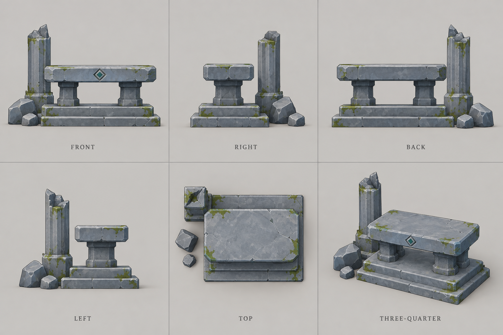
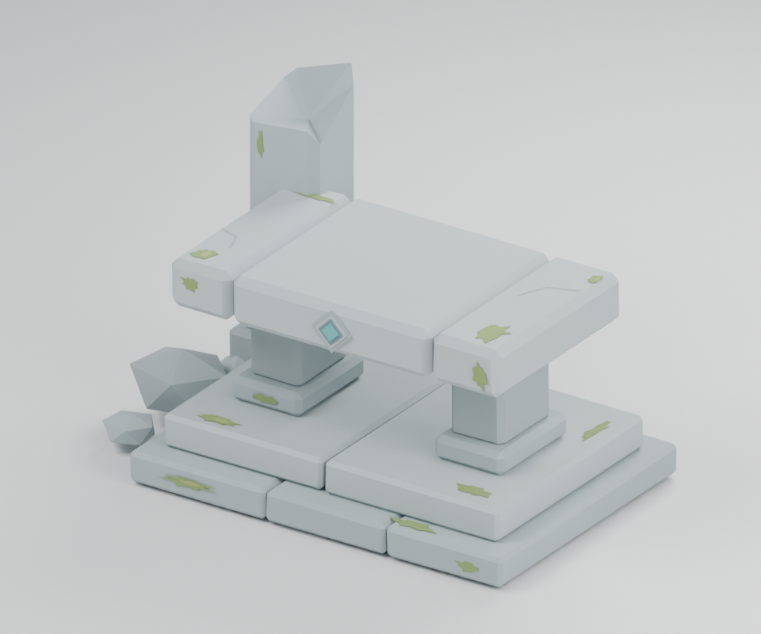

status.md
현재 상태
Day01 런타임 최적화 5단계 구현: 선택 공간 트리·최종 표면색 조회, 자원/잎 변경 시 갱신, 작은 타격 파편 풀, 활성 호버 흔적 압축, 풀 청크와 식생 거리별 밀도를 적용했다. 19개 모듈 C# 빌드 통과. 실제 성능·HLSL·Play 확인은 대기하며 프로토타입 연결은 별도다. 변경 전후와 검증 절차.
연속 지형 반영 완료: 기존 타일 가장자리 0 고정과 사인 envelope를 확인했다. 맵 전체 좌표의 gradient Perlin 높이장·공유 경계·측벽 메시와 접지 보정을 구현했다. 3~6단계 갱신, 1~2 평면 유지. 19개 모듈 빌드 통과. Unity에서 456개 타일·584개 배치를 갱신했고 공유 경계 정점 3,748개의 최대 높이 오차는 0이다. Play 체감 확인은 사용자 확인 대상이다. 원인과 변경.
첫 샷 Fade In 시작 보정: 초기화 비용으로 페이드 시간을 건너뛰지 않도록 시작 출력 프레임을 보호하고 Canvas 레이아웃을 갱신한다. 사용자 편집 시퀀스 유지, 관련 빌드 통과, 사용자 첫 샷 페이드 정상 동작 확인.
영상 컷 Fade In/Out 구현: 샷 Inspector 체크박스와 개별 시간(기본 0.6초), 컷 시작/끝에 검정 페이드 적용. 자막 포함, 컷 길이 유지, 기본 OFF로 기존 설정 보존. 관련 3개 어셈블리 빌드 통과, Play 체감 확인 대기.
영상 해변 컷 상호작용 예외 철회: 사용자 요청으로 직전 수정을 되돌렸다. 해변·물 컷은 상호작용 차단, 5~6단계에서만 AllowInteraction 적용. Day01 빌드 통과, Play 확인 대기.
시간 기반 영상 모드 구현: 기본 1~6 쇼케이스 유지, F8로 카메라·단계·TMP 자막 재생(초기 구성 165초/15컷, 이후 사용자 편집 시간 유지). Space·방향키·Home·Esc 지원. 19개 모듈 빌드 통과, Unity 시퀀스·TMP 폰트·씬·구성 프리팹 저장 완료. TMP 직접 참조 누락을 수정하고 참조 검증도 보완했다. 실제 MP4 인코딩은 별도이며 Play 확인은 미실행. 시간표·사용법.
After 기본값 확정: Pixels ON, 잎 생성·랜덤 회전 ON, 낮, Dissolve, Rounded, 풀 Sway, 피해 마크 ON. After 진입 시 적용하고 R은 비교 설정을 유지한다. Day01 빌드 통과, Play 확인은 사용자 확인 대상.
After 기준 6단계 재구성 완료: 0/20/40/60/80/100 공간, 1~6 전환, 단계별 효과 수명 분리. 현재 After 및 기존 공간 보존. 17개 모듈 빌드 통과, Unity 씬·프리팹 저장 및 공간마다 자원 17개 확인. 새 구성 8개 에셋 외부 GUID 누락 0개. Play 체감 확인은 사용자 확인 대상. 단계와 촬영 절차.
풀 스침 2·3·4번 선택 적용: 1번 제외, 세 발췌본 랜덤 재생. 0.60~0.70초의 짧은 구간을 추출하고 피크·페이드·음량 조정. 실제 풀 접촉 이동 중만 랜덤 재생, 직전 반복/중첩 방지, 정지 후 짧은 여운 보존. 새 울음 유지. 미리듣기·기록.
환경음 조정: 바람 재생 제거. 풀 소리는 After의 실제 풀 배치 위치에서 마우스가 움직일 때만 재생하고 정지/이탈 시 0.12초 페이드 아웃한다. 간헐적 새 울음과 밤 억제 유지. 17개 모듈 빌드 통과, Unity 환경음 어셈블리 생성 확인. 실제 청취는 사용자 확인 대기. 설정·확인 절차.
타격 자국 비교 구현: 나무 줄기의 목질 자국과 바위의 깨진 면·짧은 균열을 타격 위치에 누적한다. 패널 하단 Damage marks ON/OFF로 같은 상태 비교, R 초기화. DamageMarks.Core/Runtime 분리 및 15개 모듈 빌드 통과. 실제 메시 절삭은 없으며 Play/GPU 체감 확인 대기. 비교 방법.
IMGUI 확대 완료: 패널·글자·버튼 1.5배(825×339px), 좌상단 여백 16px 유지. 월드 클릭 차단 영역도 확대 크기로 맞추고 게임 화면 출력은 유지한다. Day01 C# 빌드 오류 0개, 기존 ShowcaseTarget.cs 참조 비교 경고 1개. Play 화면 검증은 미실행: 확대 버튼 클릭 시 뒤의 월드 오브젝트가 함께 클릭되지 않는지 확인한다.
Git 루트 마이그레이션 완료: Unity 변경사항을 기능별 15개 커밋으로 정리하고 프로젝트 루트에서 문서·리소스·구현을 함께 관리한다. main은 기존 게임의 경로 변경만, dev는 신규 개발 내용을 포함한다. 관련 C# 프로젝트 25개 빌드 통과, 원격 푸시와 Unity Play는 실행하지 않았다. 이전 기록, 브랜치 운영.
동심원 발생 지점의 거품 소멸·복원 추가: 중심 반경 0.16은 두 층 모두 제거, 0.38까지 부드럽게 감쇠. 0.08초 소멸·0.30초까지 유지·1.20초까지 복원하며 해안 접촉선도 함께 적용. GPU 화면 확인 대기. 확인 절차.
수면 상시 일렁임 추가: 월드 좌표 파형을 명암·굴절·거품에 연결하고 해안의 흰 거품과 하늘색 밑층이 시차를 두고 확장·수축하도록 변경. 메시 높이는 유지하며 GPU 화면 확인 대기. 변경 및 확인 절차.
Picking 런타임 생성 전환 완료: 원본 Mesh별 공유 캐시와 해제 수명 적용, 프리팹 23개 참조 정리, 저장 에셋 72개 및 Picking 폴더 제거, 원본 모델 12개 Read/Write 활성화. 13개 모듈 빌드 통과, Play 확인 대기. 변경 및 확인 절차.
Picking 생성 비용 실측: 72개 메시 전체의 메모리 생성 첫 회 2.87ms, 후속 31회 중앙값 1.034ms, 에셋 저장·임포트 2.51초. 원본 12개는 Read/Write 비활성으로 런타임 전환 전 접근 설정과 메모리 영향 검토가 필요하다. 기존 런타임/참조는 유지했다. 측정 기록.
수관 디졸브와 잎 제거 동기화: 원본 수관 부착점의 같은 Perlin 필드로 잎을 제거하고 재질 스케일도 상속한다. 눈 덮인 잎에도 적용, R 초기화 및 Sink 바닥 클립 연결. 13개 모듈 빌드 통과, GPU 체감 확인 대기. 수정 기록.
리소스 구조 정리 완료: 제작 원본은 res/art-source, Kenney 검토 자료는 res/audio/kenney-review로 통합했다. 폴더 검증 기록.
후속 시야/바람 조정: 시야 밖을 직전 대비 약 1/4 밝기로 낮추고 집 반경을 4.2m→3m로 축소하는 프리팹 갱신 준비. 풀·잎의 휘날림과 돌풍 강약 확대. 13개 모듈 빌드 통과, Refresh 및 화면 체감 확인 대기. 바닥 접점은 기존 소품 28개와 기단 높이 2곳 보정이다.
접지·공통 바람·밤 대비 조정 완료: 기존 작은 돌/고사리 28개와 집·제단 기단 2곳 보정, Wind 독립 모듈, 밤 실루엣 및 작은 광원 강조. 13개 모듈 빌드 통과. 에디터에서 접점 프리팹과 After 씬 저장 확인. Play 체감 확인 대기. 상세 기록.
화면 밀도/타격 리듬 보완: 해안 중심 거품, After 풀·꽃 군집과 여백, 45ms 접촉 유지·빠른 반동 복귀·표면 방향 파편 적용. 12개 모듈 빌드 통과, Play/GPU 체감 확인 대기. 변경과 확인 절차.
최신 소품 배치: 기존 SwordTool을 봉헌된 검처럼 제단 상판 중앙에 대각선으로 눕혀 배치. 원본 모델 생성/수정 없이 재사용했으며 클릭 표면 연결과 프리팹 저장 완료. Play 시각 확인 대기.
- 갱신일: 2026-09-20
- 현재 단계: Day01 기능 정리 및 모듈화
- 제작 목표: 기존 모델과 필요한 개별 모델 개선으로 작은 중세 판타지 맵을 아름답고 반응감 있게 표현
- 기술 상태: 표현 기능 구현, 모듈 분리 코드 작성 및 C# 빌드 통과. Unity 에셋 이동 및 프리팹 30개 저장 완료. 분리된 12개 어셈블리 빌드 통과.
- 경험 검증: 이전 대화에서 반복 조정. 이번 구조 변경 후 화면·소리 검증은 아직 하지 않음.
- 공개 상태: 미공개. 공유마당 음원 크레딧 실제 영상 설명란 반영 필요.
이번 변경
물소리 연속 재생 자연화: 5개 구간 변형, 0.25~0.40초 간격, 연속 이동 볼륨 55%, 미세 피치 변형 및 여운 보존 적용. Audio/Day01 빌드 통과, 사용자 청취 확인 대기.
물소리 시작 어택 제거: 첫 100ms 삭제, 0.30초 길이·30ms 페이드 인·기존 게인 유지로 음원 교체. 사용자 청취 확인 대기.
물 호버 무음 원인 수정: 기존 음원 정리 코드가 신규 물소리를 Archive로 이동한 것을 확인. 정리를 이전 후보에 한정하고 다음 Unity 리로드 시 GUID 보존 자동 복구하도록 수정. Audio/Editor 빌드 통과, 재생 확인 대기.
물 호버 동심원 효과음 연결: 사용자 제공 WAV에서 0.4초 구간 추출, 별도 채널·0.10초 최소 간격·초기화/해제 연결. 작업 및 사용자 청취 확인 절차.
클릭과 눈 효과가 구체적인 Day01 타깃에 묶이지 않도록 인터페이스를 분리했다. 효과음 선택과 파괴 수치를 설정 에셋으로 옮겼다. 공용 기능은 Modules, 장면 조립은 Day01에 배치한다. 음원 분석·선정 파일과 PNG·FBX 보관본은 루트 res에 모았다.
다음 순서
- 최신 호버 조정의 화면 체감 확인
- 구조 변경 후 기존 효과와 참조를 사용자 화면에서 확인
- 1~6 단계 전환과 누적 표현을 같은 구도에서 확인하기
- 필요한 제작 장면만 녹화하고 짧은 전후 비교 편집
중간 단계는 현재 After를 기준으로 6단계 구성을 완료했다. Unity 씬·프리팹 저장 확인 완료, 화면 확인은 사용자 확인 대상이다. 새 게임 규칙은 추가하지 않고, 완성 단계에서 표현 개선과 개별 모델 보강을 진행한다.
최신 호버 피드백 반영
풀 반응 강도 감소, 흙먼지 가시성 강화, 모래/눈의 위치 고정 및 2.5초 복원, 물의 이동 시작 보장 및 0.45 이동 거리 기준 생성을 반영했다. 상세 기록은 호버 조정. Play 시각 검증은 사용자 확인 대기다.
최종 파일 확인: 프리팹 30개, 직렬화 에셋 305개의 외부 GUID 미해결 0개. 비활성 음원의 Archive 이동 후속 정리만 다음 에디터 임포트에 실행된다.
최신 조정: 풀/먼지 최초 강도 복원(먼지는 이동 시에만), 배열 크기 경고 대응 V2 전역 배열, 물 전용 슬롯 및 실제 수면 변위 적용. 사용자 화면 검증 대기.
나무 한 그루 잎 카드 비교 구현: After의 눈 없는 첫 나무, L 전환, 기존 Grass2 PNG 재사용. 실험 기록. 화면 검증 대기.
잎 카드 추가 조정: 밀도 약 2.46배, 최대 1,800개, 완전 카메라 빌보드로 변경. 화면 체감 확인 대기.
최신 잎 비교: 최대 2,000개/면적당 200개, 부분 겹침 허용·동일 부착점만 제외, 회전 통일, 바람 유지, 호버·피격 플래시 동기화. 실제 수는 화면 안내에 표시.
회전 비교 대상 정정: 바닥 풀 회전 실험 제거·원래 표현 복구. G는 나뭇잎 동일 방향/고정 랜덤 0~360도 전환, L은 잎 표시 전환. GPU 체감 확인 대기.
랜덤 회전 채택: After 모든 나무에 잎 카드 적용, 기본 랜덤 회전 ON. G/L 전체 전환 및 총 개수 표시. 시각/성능 검증 대기.
수관 일부 누락 수정: 2,000개 상한을 앞쪽 삼각형이 독점하지 않도록 전체 표면 면적 비례 분배 적용.
눈 표현 보완: 수관 눈 덮개 두께 약 1.9배, 잎 스프라이트에도 눈 색/두꺼운 테두리 및 타격 침식 연동.
적설 보완: 나뭇잎 및 눈 덮개의 하향면·위쪽 수관에 가려진 영역 제외, 쓰러짐에도 초기 적설 위치 유지.
잎 적설 경계 보완: 부착점 아래로 내려오는 빌보드 픽셀은 녹색 유지, 눈 덮개와 위쪽 법선 기준 통일.
최신 적설 변경: 직전 픽셀 높이 제한 복구. 원본 임포트 법선 기준으로 아랫면 방향을 확인해 부착 잎의 원래 색을 유지하도록 보정. 사용자 화면 검증 대기.
최신 요청 반영: 윗면 전체 흰 적설 복원. 수관 가림/노출도 감쇠 제거, 아랫면 제외 및 타격 침식 유지.
폐허 중앙 수정: 청록 HDR 발광 및 After 전용 Bloom 구현. 화면 강도/픽셀 렌더 체감 확인 대기.
수정 Bloom 미표시 원인 확인: 전용 렌더러의 PostProcessData 연결 누락. 자동 연결 코드 추가, Refresh 반영 및 화면 검증 대기.
Bloom 조정: 수정 번짐 강도/범위 소폭 감소, 집 창문은 밤에 약한 따뜻한 HDR 발광으로 같은 Bloom에 참여.
흙 호버 먼지 크기 2배 확대(0.09~0.18). 이동 중 방출과 기존 색/투명도 유지.
창문 Bloom 강화: 원래 창문 색조 기반 HDR 3.4, 수정 설정 유지.
흙먼지 최신값: 크기 0.27~0.54, 시작 알파 0.30. 더 크고 옅게 조정.
숲 추가 배치 준비: After 숲 타일의 빈자리에 기존 프리팹 최대 3그루, 80% 크기로 배치하는 일회성 에디터 코드 작성. 구조물/기존 자원 간격 확인, 미저장 씬은 보존하고 저장 후 재시도. Refresh 이후 씬 저장 결과 확인 대기.
버려진 제단 교체 완료: ImageGen 6방향 시안 → Blender 편집 원본과 FBX 제작 → Unity 프리팹 생성 및 After 씬 저장까지 실제 반영. 1,338개 삼각형/렌더러 1개, 기존 제단은 비활성 자식으로 보존. 시안·모델·검증 기록. 추가 숲 나무 3그루도 현재 씬 저장에서 확인했다. Play 화면 체감은 사용자 확인 대기.
day-01/production.md
Day01 제작 목표와 촬영 계획
확정한 방향
마케팅 목적의 Devlog다. 개발량을 나열하기보다 화면의 변화와 클릭 반응으로 게임의 품질을 전달한다. 기존 중세 판타지 모델을 사용하며 새 모델링은 하지 않는다. 녹화는 사용자가 필요한 부분을 선택해서 진행한다.
게임의 기본 지형은 평지다. 표현용 타일 내부 굴곡은 있으며 이동 규칙에 고저차를 추가한 것은 아니다. 완성본을 기준으로 단계별 표현을 분리해 전후 차이를 촬영한다.
6단계 공간 — Unity 씬·프리팹 저장 완료
최신 After의 배치를 기준으로 앞의 다섯 공간을 구성한다. 원래 개발 시점의 재현이 아니라 화면 변화가 명확한 순서로 정리한 촬영용 단계다.
| 키 |
위치 X |
단계 |
화면 변화 |
| 1 |
0 |
Before |
회색 기본 도형, 평면 격자 |
| 2 |
20 |
형태와 스타일 |
기존 모델, 기본 바이옴 색, 픽셀 출력 |
| 3 |
40 |
지형과 물 |
블록 굴곡, 지형 경계 혼합, 해안, 깊이와 거품 |
| 4 |
60 |
살아 있는 환경 |
풀·꽃·장식, 잎 빌보드, 바람, 눈, 연기, 환경음 |
| 5 |
80 |
상호작용 |
호버, 타격, 자국, 파괴·디졸브, 효과음 |
| 6 |
100 |
After |
현재 완성본, 낮/밤, 시야, 수정과 창문 발광 |
각 공간은 12×10 타일이며 같은 카메라 구도를 사용한다. 숫자 키와 패널의 6개 버튼으로 전환한다. 이전 Before/Process는 비활성 보관하고 원본 After는 100 위치에 유지한다. 설치·보존·확인 절차.
촬영 구성
- After에서 짧은 타격 장면으로 완성 모습을 먼저 보여준다.
- Before로 돌아가 같은 화면에서 1→2→3을 차례로 비교한다.
- 4에서는 풀·잎·눈·연기의 움직임을 보여준다.
- 5에서는 같은 나무/바위의 호버와 타격, 파괴를 보여준다.
- 6에서는 밤과 창문·수정의 빛으로 마무리하고 Before/After를 다시 비교한다.
H로 패널 숨김, R로 테이크 초기화. 영상 길이와 컷 수는 아직 확정하지 않았다.
공개 전
게임/영상 크레딧은 음원 크레딧 지침을 따른다. 개발 문서에 출처를 적은 것과 영상 설명란 반영 완료는 별개다.
버려진 제단 형태 참고
AbandonedAltar는 버려진 제단이라는 뜻이다. 구조물 모양을 알아보기 쉽게 하려면 평평한 돌 상판과 낮은 받침대를 중심으로, 깨진 기둥/이끼 등 폐허 단서를 붙이는 방향을 제안한다. 이번 작업에서는 제단 모델을 변경하지 않았다.
웹 예시 열람용 링크이며 프로젝트 에셋으로 다운로드/적용하지 않았다.
시간 기반 연출
165초·15컷 초안과 한국어 TMP 자막을 구현했다. 기본은 1~6 수동 쇼케이스이며 F8에서만 영상 모드를 시작한다. 컷별 카메라와 자막은 시퀀스 에셋에서 편집한다. 시간표·조작·구도 저장. 영상 파일 인코딩은 별도이며 현재는 Unity 내 연출 재생을 구현한 상태다.
records/stage-progression.md
After 기준 6단계 재구성
작업 목록
단계 설계
| 키 |
위치 X |
단계 |
추가되는 표현 |
| 1 |
0 |
Before |
회색 primitive, 평평한 격자, 동일한 배치 |
| 2 |
20 |
형태와 스타일 |
기존 모델, 바이옴 기본색, 픽셀 출력 |
| 3 |
40 |
지형과 물 |
타일 높낮이·색 혼합, 해안, 깊이와 거품 |
| 4 |
60 |
살아 있는 환경 |
풀·꽃·장식, 나뭇잎, 바람, 눈, 연기, 환경음 |
| 5 |
80 |
상호작용 |
호버, 타격과 소리, 자국, 파괴와 제거 |
| 6 |
100 |
After |
현재 완성본, 낮/밤·시야·수정과 창문 발광 |
이전 개발 시점을 복원하는 것이 아니라 현재 완성본에서 표현을 순차적으로 더하는 촬영용 재구성이다. 오브젝트의 XZ 배치와 카메라 구도는 유지한다. 원본 After는 변경하지 않고 공간별 재질을 분리하여 지형 색상 맵 좌표를 보정한다.
촬영 흐름
완성본을 먼저 짧게 보여준 뒤 1번으로 돌아간다. 같은 구도로 1→2→3을 비교하고, 4에서는 풀·눈·바람을 가까이 보여준다. 5에서는 같은 나무와 바위의 타격·파괴를 보여주고 6에서 밤·수정·창문과 전체 맵으로 마무리한다. H로 UI 숨김, R로 촬영 상태 초기화. 기존 비교 버튼은 해당 기능이 등장한 단계부터 사용한다.
검증
- 17개 Devlog 어셈블리
dotnet build --no-restore 통과.
- Unity Play 및 Test Runner는 실행하지 않았다.
- Unity 저작 완료: 2026-09-20 12:43 KST에 씬·단계 프리팹·전체 구성 프리팹을 저장했다. 사용자 Refresh 완료 응답도 확인했다.
stage-progression-unity.json: 위치 X=0/20/40/60/80/100, 각 자원 17개, After 위치·자원 수 보존 확인.- 새 프리팹 7개와 씬 1개의 외부 GUID 참조 누락 0개. 생성 이후 Editor.log의 C# 오류·셰이더 오류·예외 0개.
- 원본 After baseline, 이전 씬 백업, 비활성 이전 공간 보관 확인. 화면 및 소리의 최종 체감은 사용자 확인 대상이다.
- 사용자 확인: Play에서 1→6→1→6 전환, 같은 집/나무 위치와 화면 구도 유지, 1~4에서 타격 없음, 5에서 타격·파괴, 6에서 N으로 밤과 집 시야·발광 확인.
- 5에서 물/눈 호버와 나무 파괴 후 다른 단계로 전환했다가 돌아왔을 때 흔적·파티클·소리·파괴 상태가 초기화되는지 확인한다.
보존 및 수명
원본 After는 100 위치에서 참조를 유지한다. 생성 직전 씬은 Scenes/Archive/Devlog_Day01_BeforeProgression.unity, After 캡처는 Prefabs/Stages/Progression/AfterBaseline.prefab에 보관한다. 기존 Before/Process는 원래 부모와 위치를 유지한 비활성 Archived_ 오브젝트로 남긴다.
PresentationStages가 6단계의 실제 전환 목록이다. 기존 Stages[2]는 에디터 업그레이드 호환을 위해 After로 유지한다. 단계별 지형 재질은 Materials/Progression, 새 5개 공간 프리팹은 Prefabs/Stages/Progression, 전체 구성은 Prefabs/Composition/Day01Progression.prefab에 저장한다.
단계 전환은 촬영 상태를 초기화하고 기존 효과를 해제한 뒤 선택 공간만 활성화한다. 풀/잎/연기, 해안, 호버, bloom은 필요한 단계에서만 생성한다. 낮/밤과 바람의 전역 상태도 단계에 맞춰 변경하고 종료 시 복원한다. 자동 설치는 최초 1회이며 이후 Refresh에서 공간을 재생성하지 않는다.
After 기본 설정 확정
작업 목록
Pixels ON, 잎 생성 ON, 잎 랜덤 회전 ON, 낮, Dissolve, Rounded 해안, 풀 Sway, 피해 마크 ON. After 진입 시 이 조합을 적용하며 진입 후 비교 버튼과 키로 변경할 수 있다. R은 선택한 비교 설정을 유지하고 촬영 상태만 초기화한다.
검증: Day01 dotnet build --no-restore 오류 0개, 기존 참조 비교 경고 1개. Play 미실행. Unity 임포트 후 Play → 6에서 픽셀·잎 ON/랜덤·낮·Dissolve·Rounded·Sway·피해 마크 ON 확인. 설정을 변경하고 1→6으로 돌아오면 확정 기본값으로 복원되는지 확인한다. 프리팹 재생성은 필요 없다.
records/movie-sequence.md
Day01 시간 기반 영상 연출
작업 목록
시간표
| 시간 |
단계 |
화면 |
자막 |
| 0:00–0:08 |
6 |
완성 맵, 느린 접근 |
회색 도형으로 시작한 작은 세계입니다. |
| 0:08–0:20 |
1 |
전체 맵 고정 |
처음에는 나무도 집도 단순한 도형이었습니다. |
| 0:20–0:40 |
2 |
같은 구도에서 모델 소개 |
중세 판타지 모델과 색을 입히고, 픽셀 느낌을 더했습니다. |
| 0:40–0:52 |
3 |
전체 지형에 접근 |
반듯한 타일에 작은 굴곡과 자연스러운 경계를 더했습니다. |
| 0:52–1:05 |
3 |
해변과 물 |
물에는 깊이와 거품을, 해변에는 부드러운 모서리를 만들었습니다. |
| 1:05–1:18 |
4 |
숲과 나뭇잎 |
풀과 나뭇잎이 바람에 흔들리기 시작합니다. |
| 1:18–1:28 |
4 |
눈 바이옴 |
눈은 위를 향한 면에 쌓이고, 잎 사이로 원래 색이 보입니다. |
| 1:28–1:35 |
4 |
집과 굴뚝 |
작은 굴뚝에도 움직임을 더했습니다. |
| 1:35–1:44 |
5 |
지면, 직접 호버 |
마우스가 지나간 자리에도 반응이 남습니다. |
| 1:44–1:58 |
5 |
나무, 직접 타격 |
도끼가 닿은 곳에 자국이 남고, 나무는 반대 방향으로 흔들립니다. |
| 1:58–2:12 |
5 |
바위, 직접 타격 |
바위는 조각으로 흩어지고, 천천히 사라집니다. |
| 2:12–2:25 |
6 |
집, 낮→밤 |
밤에는 작은 불빛 주변만 보이도록 했습니다. |
| 2:25–2:33 |
6 |
수정 구조물 |
어둠 속에서 빛나는 작은 발견도 남겨두었습니다. |
| 2:33–2:38 |
1 |
전체 맵 고정 |
시작은 이 모습이었지만… |
| 2:38–2:45 |
6 |
같은 구도, 낮 완성본 |
이제 조금은, 만지고 싶은 세계가 되었습니다. |
시퀀스 재생과 실제 동영상 파일 인코딩은 별개다. 이번 작업은 Unity에서 카메라·TMP 자막·단계 연출을 재생하는 촬영 시스템이다. 현 프로젝트에는 Unity Recorder 패키지가 설치되어 있지 않다. Game View 전체를 녹화해야 픽셀 합성과 Overlay 자막이 함께 담긴다.
두 모드의 동작
- 기본: 기존 쇼케이스. Play 진입만으로 영상이 시작되지 않는다. 1~6 전환과 기존 비교 기능을 유지한다.
- F8: 영상 모드 시작/종료. 시작 시 0초부터 재생한다. 끝나면 마지막 구도를 유지하고 Esc/F8로 복귀한다.
- Space: 연출 시계 일시정지/재개. 월드 애니메이션·효과음과 직접 상호작용은 계속 동작한다.
- ← / →: 이전/다음 컷 시작으로 이동. Home: 영상 처음부터 재시작.
- Esc: 진입 전에 선택한 쇼케이스 공간과 가이드 표시, 카메라 크기를 복원한다. 타격 상태는 초기화된다.
- 영상 모드의 1~6/P/N/H/R/G/L 입력은 차단한다. 호버·타격 컷에서만 마우스 상호작용을 허용한다.
에디터에서 조정
- Day01 씬을 열고
Day01FilmDirector 컴포넌트가 있는 쇼케이스 루트를 선택한다.
- Film에 연결된
Assets/Devlog/Day01/Data/Day01Film.asset을 선택한다.
- Shots에서 Duration, Subtitle, SubtitleDelay/Duration, From/To의 Focus·Offset·OrthographicSize를 조정한다. Stage는 0~5이며 키 1~6에 대응한다.
- 구도 편집 컷 선택 → 선택 컷을 Scene 뷰에서 보기 → Scene 뷰에서 구도 조정 → Scene 구도 → From/To로 저장한다. 구도 저장은 Play 밖에서만 가능하다.
- Play에서 F8로 재생한다. Director Inspector의 시간 슬라이더로 구간을 확인할 수도 있다.
컷 경계는 즉시 전환하고, 컷 안에서는 From→To를 SmoothStep으로 이동한다. Focus는 각 단계 공간의 로컬 좌표이므로 1번과 6번에 같은 구도를 사용할 수 있다. 기본 전체 구도는 기존 orthographic size 5.5를 유지한다. 타격 대상 구도는 설치 시 After의 앞쪽 나무/바위 위치에서 만든다.
자막은 기존 한국어 Mona12TextKR TMP 폰트를 사용한다. 픽셀 화면은 낮은 sorting order의 Overlay RawImage, 자막은 높은 sorting order의 Overlay Canvas에 표시한다. 따라서 자막은 픽셀화되지 않고 레터박스 안쪽 안전 영역에 위치한다. 영상 모드에서 IMGUI 조작 패널은 숨긴다.
검증과 제한
- Cinematics.Core(순수 C# 시간 모델), Cinematics(TMP/카메라 뷰), Day01(입력·장면 어댑터)을 분리했다.
- 19개 Devlog 어셈블리
dotnet build --no-restore 통과. Play/Test Runner는 실행하지 않았다.
- Unity 저장 완료: 2026-09-20 15:43 KST, 15컷/165초/기본 showcase/폰트 연결.
movie-sequence-unity.json 확인.
- 저장된 시퀀스·씬·구성 프리팹의 외부 GUID 참조는 Assets 및 URP 패키지에서 모두 확인했다. 저장 이후 신규 C# 오류·셰이더 오류·예외 0개.
- 사용자 확인: 기본 1~6 출력 → F8 → 자막과 카메라 → Space·좌우 이동 → 1:35~2:12 직접 조작 → 밤 → Esc 복귀. 특히 픽셀 프레임이 자막을 가리지 않는지, 글자 누락이 없는지 확인한다.
- 컷/시간 이동은 파괴·소리 이력을 되감지 않는다. 선택 구간의 장면을 초기화해 재촬영한다. 실시간 연출이므로 커서 행동과 파괴는 자동 녹화/재생되지 않는다.
- 실제 파일 녹화 시 카메라 단독 출력이 아닌 Game View 전체를 캡처해야 한다. Recorder 패키지 설치·MP4 출력은 이번 구현에 포함하지 않았다.
- 공개 영상에 사용된 외부 음원은
docs/audio-credits.md에 따라 영상 설명란에 반영한다. 내부 문서 작성은 공개 크레딧 반영 완료가 아니다.
컴파일 후속 수정: Day01의 TMP_FontAsset 검증이 Unity.TextMeshPro 직접 참조를 요구했으나 asmdef에서 누락되어 Unity CS0012가 발생했다. 참조를 추가했고 검증 도구도 TMP/UI 패키지 참조를 asmdef에서 명시적으로 생성하도록 수정해 같은 누락을 숨기지 않게 했다. 변경 후 19개 어셈블리 빌드 통과.
해변 컷 상호작용 수정 — 이후 사용자 요청으로 철회
원인: 해변 컷은 Stage=2(키 3)여서 기존 Phase<4 입력 차단과 Phase>=4 호버 생성 조건에 걸렸다. 영상 모드는 컷 설정을 우선하고 지형이 있는 3~4단계에서도 필요할 때 Hover/HoverTerrain을 생성한다. 체크 해제·컷 이탈 시 임시 모듈을 해제한다. 재생 중 체크 변경도 다음 프레임에 반영한다. 수동 쇼케이스의 단계별 기능은 유지한다. Day01 빌드 오류 0개(기존 경고 1개), Play 미실행. 확인: F8→해변 컷→AllowInteraction ON→물 이동 시 물결·소리, 모래 이동 시 흔적; OFF 시 새 반응 없음; Esc→키 3에서는 반응 없음, 키 5~6에서는 기존 반응 유지.
해변 컷 상호작용 예외 철회
복구 완료: 해변·물 컷은 AllowInteraction 체크와 관계없이 상호작용을 차단한다. 5~6단계에서만 컷의 AllowInteraction을 적용한다. 직전 코드 변경만 되돌렸으며 사용자 시퀀스 에셋은 변경하지 않았다. Day01 빌드 오류 0개, 기존 경고 1개. Play 확인은 미실행.
샷별 화면 페이드
Day01Film → Shots → 각 샷의 Shot transition에서 Fade In/Out을 독립적으로 선택한다. 기본은 둘 다 OFF이므로 기존 컷은 그대로 유지한다. 시간 기본값은 각각 0.6초다.
- Fade In: 현재 컷 시작부터 검정→영상. Fade Out: 현재 컷 종료 직전부터 영상→검정.
- 컷 Duration 안에서 수행하므로 전체 165초 길이는 늘어나지 않는다. 페이드 시간 합이 컷보다 길면 비율을 유지하여 컷 길이로 줄인다.
- 영상과 TMP 자막을 함께 덮는 검정 Overlay이며 음량과 상호작용 허용 설정은 바꾸지 않는다.
- 이전 컷 Fade Out과 다음 컷 Fade In을 모두 켜면 검정을 거쳐 연결된다. 한쪽만 켜면 다른 쪽은 즉시 컷 전환한다.
- 일시정지·시간 이동에도 현재 컷의 로컬 시간으로 같은 불투명도를 계산한다. 마지막 컷 Fade Out이 켜져 있으면 종료 화면은 검정이며 Esc로 정상 복귀한다.
- Cinematics, Day01, Day01.Editor 빌드 통과(기존 Day01 참조 비교 경고 1개). Play 미실행. 확인: Refresh 후 연속한 두 컷에서 Out/In 체크 → F8 재생, Space 정지/시간 이동 시 페이드 유지, 체크 OFF 시 기존 컷 전환, Esc 복귀 후 검정 오버레이 제거.
첫 샷 페이드 시작 보정
첫 샷의 저장된 FadeIn=ON, FadeInDuration=0.6을 확인했다. 맵/잎 재생성 비용을 포함하는 첫 delta가 페이드 시간을 건너뛸 수 있어, 진입 프레임과 그 비용을 보고하는 다음 프레임에는 시계를 진행하지 않는다. 시작 Canvas 레이아웃도 즉시 갱신한다. 재시작·페이드 인 컷 진입에도 동일하게 적용한다. 샷 Duration/자막/구도 에셋은 수정하지 않았다. Cinematics 및 Day01 빌드 통과, Play 미실행. 확인: Refresh → F8에서 첫 검정 프레임 이후 0.6초 동안 밝아짐, Home 재시작도 동일, OFF는 즉시 표시. 페이드 진입 때 출력 준비 프레임만큼 실제 경과 시간은 추가될 수 있으며 시퀀스 시간표는 그대로다.
records/continuous-terrain.md
맵 좌표 기반 연속 지형
작업 목록
확인한 원인
ShowcaseTileVariants.NodeHeight는 경계 정점을 0으로 고정하고 sin(upi)sin(v*pi)를 곱해 타일 중앙만 솟게 했다. Height 역시 타일별 Shape/Rotation을 역변환하여 이 로컬 높이를 조회했다. 원했던 맵 전체의 연속 높이장은 적용되어 있지 않았다.
변경 계약
타일 번호+타일 내부 위치를 합친 맵 전체 좌표에서 gradient Perlin을 계산한다. 0/20/40/60/80/100에 복제된 쇼케이스는 같은 지도이므로 공간 이동 오프셋은 노이즈에서 제외한다. 타일별 시드·회전으로 높이를 재시작하지 않는다. 모든 경계 정점은 같은 좌표에서 같은 높이를 사용한다. 1~2단계의 평면과 물/해저 높이는 유지한다. 3~6단계는 같은 지형을 공유하며 기존 재질과 장식의 종류·XZ 배치를 유지한다.
구현
- ShowcaseTerrainField: 3개 주파수의 gradient Perlin을 같은 맵 좌표로 샘플링한다. 타일 내부 sin envelope와 경계 0 고정이 없다.
- 메시 상면은 0.25m 간격 정점과 좌표 기반 대각선으로 구성한다. 높이 조회는 같은 삼각형을 보간하므로 풀과 자원의 높이가 일치한다.
- 타일 회전은 새 지형에 적용하지 않는다. 장식의 월드 회전·XZ 위치는 보존하고 타일 높이에 맞춰 Y만 보정한다.
- 해안 Rounded/Bevel은 연속 지형 메시 위에 기존 방식으로 적용한다. 물 표면과 해저 높이는 변경하지 않는다.
- 기존 구조물 아래의 타일 단위 평면도 제거하며 환경 오브젝트의 바닥 높이를 보정한다. 이전 메시 파일은 변경하지 않는다.
- Unity 설치기는 편집 상태의 저장된 씬만 처리한다. 3~6단계 메시를 갱신하고 단계별 프리팹, 전체 구성 프리팹, 씬을 저장한다. 반복 Refresh는 재생성하지 않는다.
- Geometry/ContinuousTerrain에 좌표별 메시, Prefabs/Stages/ContinuousTerrain에 갱신된 단계 프리팹을 저장한다.
확인
19개 모듈 dotnet build --no-restore 통과. Play/Test Runner 미실행. Unity 저작 반영 완료: 4개 단계의 타일 456개와 배치 584개를 갱신했다. continuous-terrain-unity.json의 공유 경계 정점 3,748개 검증에서 최대 높이 오차는 0이다. 시각적 체감 확인은 사용자 확인 대상이다.
사용자 확인: Refresh 후 3/6에서 타일 테두리가 평지로 내려가지 않고 언덕이 이어지는지, 집/자원/장식/풀이 지면에 붙는지, Rounded 해안에 구멍이 없는지 확인한다. 1/2는 기존 평면이어야 한다. 5/6의 모래·눈 흔적과 물 클릭, 나무/바위 파괴 후 지면 위치를 함께 확인한다. Film 시퀀스의 사용자 구도·자막·시간은 변경하지 않는다.
records/runtime-optimization.md
Day01 런타임 최적화
- 날짜: 2026-09-20
- 범위: 기존 Day01 표현 모듈의 최적화. 프로토타입 게임 이벤트 연결은 후속 작업이다.
- 실제 CPU/GPU 성능 향상 수치는 아직 측정하지 않았다.
작업 목록과 변경 전후
모듈 경계와 수명
새 Unity 에셋·메타데이터·메뉴는 만들지 않았다. 기존 Interaction, Destruction, Vegetation, Hover 어셈블리 안에 공용 기능을 두고 Day01에서 조립한다. 각 클래스는 게임의 자원 보상이나 프로토타입 상태를 참조하지 않는다.
- 선택 인덱스는 장면 진입과 해안 변경 후 재구성하고 공간 해제 때 Clear한다. 프로토타입에서 정적 배치/부모 Transform/메시를 변경하면 소유자가 Rebuild해야 한다. 동적으로 움직이는 비타깃 소품은 별도 등록 정책이 필요하다.
- 파편 풀은 R과 단계 전환에서 회수하고 Day01 비활성화 시 Dispose한다. 작은 파편은 상태·자세·색상을 다시 설정한 뒤 재사용한다.
- 호버 Reset/Dispose는 압축 개수를 0으로 만든다. 기존 단일 쇼케이스 전역 셰이더 제약은 유지한다.
- 잎 버전 제공자는 피격, 눈, 디졸브, 렌더러 표시 변경을 포함해 버전을 갱신해야 한다. 별도 소비자가 원본 렌더러를 직접 수정한다면 버전을 함께 올리거나 버전 함수를 생략한다.
- 식생은 생성 메시를 소유하고 Dispose에서 해제한다. 기존 원본 모델은 수정하지 않는다.
검증 결과와 직접 확인 절차
python devlog/tools/build_modules.py에서 19개 독립 어셈블리의 dotnet build --no-restore 통과. Day01의 기존 인터페이스 참조 비교 경고 CS0252는 남아 있다. Unity Play/Test Runner는 실행하지 않았다. C# 빌드는 HLSL 컴파일·화면·성능 검증을 대체하지 않는다.
- Unity 임포트가 끝나면 Day01 씬의 6번 After에서 지형·나무·바위·제단과 가려진 대상을 클릭한다. 클릭 지점·색·눈 표면 선택이 기존과 같아야 한다. 해안 3종 전환 후에도 일치해야 한다.
- 풀과 모래·눈 위를 이동하고 멈춘다. 풀 반응과 약 2.5초 복원을 확인한다. 물 동심원·거품 복원도 유지되어야 한다. R과 단계 전환 뒤 이전 흔적이 남지 않아야 한다.
- 나무·바위를 반복 타격하고 파괴한다. 자국·눈·잎 플래시·쓰러짐·Sink/Dissolve가 동기화되어야 한다. R 이후 파편의 색·회전·수명이 정상이고 풀에 반납한 파편이 화면에 남지 않아야 한다.
- 카메라를 멀리 이동했다가 가까이 복귀한다. 풀·잎 밀도가 분산된 상태로 줄고 다시 전체로 돌아와야 한다. 청크 경계와 화면 가장자리에서 풀 누락이 없어야 한다. 먼 거리의 순간적 밀도 전환은 현재 단계형 LOD의 한계다.
- 같은 구도/해상도/오브젝트 수에서 정지, 연속 호버, 연속 타격, 나무 수 증가를 비교한다. CPU/GPU 프레임 시간, GC Alloc, Batches, 삼각형 수를 기록한다. 풀 청크는 작은 맵 전체가 보일 때 드로콜을 늘릴 수 있으므로 실제 프로토타입 규모에서 이득을 확인해야 한다.
후속 오류 수정
Play 종료 시 Day01Showcase 필드 초기화에서 MaterialPropertyBlock을 생성해 CreateImpl is not allowed 예외가 발생했다. 해당 생성은 유효한 참조 확인 후 OnEnable로 옮겼으며 재활성화 시 기존 블록을 재사용한다. 다른 블록 생성 지점은 Awake 이후 초기화 또는 런타임 호출에서 생성됨을 확인했다. Day01 C# 빌드로 확인하며, Unity에서 Play 진입→타격→정지를 반복했을 때 같은 예외가 없어야 한다. 기존 빌드 검증만으로 Unity 수명주기 예외를 발견하지 못했던 수정이다.
남은 최적화 후보
메시 내부 삼각형 가속 구조, 잎 생성 중 중복 부착점의 공간 해시, 눈 타격 후보의 국소 검색, 큰 바위 조각 풀링, 장면 전환 생성 캐시는 후속 후보다. 이번 변경으로 해결했다고 간주하지 않는다.
day-01/features.md
기능 목록과 조작법
아래는 구현된 기능 목록이다. 이번 폴더/프리팹 변경 후의 시각·청취 검증 완료를 뜻하지 않는다.
| 기능 |
현재 동작 |
조정 위치 / 한계 |
| 지형 |
7종 바이옴, 맵 좌표 Perlin 굴곡, 연속 경계와 색 혼합, 타일 장식 |
3~6단계 연속 메시 갱신. 장식 회전 보존, 지형 회전 제거 |
| 수면 |
깊이에 따른 반투명 파랑, 서로 다른 노이즈의 흰색/하늘색 거품, 접촉 하이라이트 |
After_OceanDepth 재질. 호버 파도는 실제 정점 변위 |
| 물/해저 |
해저 5%, 그 위 물 45%, 서로 겹치지 않음 |
육지 0.8 기준 해저 0.04, 물 0.36 |
| 해안 |
Square / Bevel / Rounded 비교, 단면 측벽 채움 |
Shoreline. After 기본 Rounded |
| 풀 |
PNG 풀잎 빌보드, 타일색 기반 3단계 명도, 바람·앞뒤 흔들림 |
Vegetation. 풀/숲의 드문 특이 풀과 장식 |
| 눈 |
별도 눈 덮개 메시, 소나무 잎 전체 덮음, 타격 영역 침식과 하강 눈 파편 |
Snow. 원본 정점을 분리해 부푸는 방식에서 교체 |
| 표면 선택 |
삼각형 교차점·표면색, 변형된 표면 대응 |
Interaction. 일반 물리 Collider만 사용하는 방식이 아님 |
| 타격 |
도끼 날/곡괭이 끝이 교차점에 도달, 반대 방향 반동 |
Day01 타깃 어댑터 |
| 일반 클릭 |
비상호작용 표면도 표면색의 작은 파편 |
HitChip 프리팹 |
| 파괴 |
나무 쓰러짐, 바위 여러 조각 굴림, Sink / Perlin Dissolve 선택 |
DestructionProfile. 바위는 진짜 절단 메시가 아닌 축소 조각 |
| 효과음 |
돌 타격 2종 순환, 파괴음, 나무 타격/쓰러짐 |
ShowcaseAudioBank. 채널 분리 |
| 낮/밤 |
어두운 밤, 위로 띄운 커서 시야, 집 주변 시야 유지 |
Lighting. 전역 셰이더 값 사용 |
| 집 |
약한 따뜻한 창문, 굴뚝 노이즈 연기 |
Lighting. 실제 메시 굴뚝 위치 사용 |
| 풀 호버 |
최초 강도의 방사형 기울임 / 흔들림 비교 |
Hover. 뿌리 고정 |
| 흙 호버 |
이동할 때만 생성되는 황토색 흙먼지 |
Hover 파티클 |
| 모래/눈 호버 |
지나간 경로의 얕은 골과 가장자리, 커서 정지 중에도 2.5초 내 복원 |
Hover. 장식물은 변형을 따라 움직이지 않음 |
| 물 호버 |
이동 시작 시 동심원 보장, 0.45 이동 거리마다 생성·소멸 |
Hover + Water. 실제 높이 변위와 경사 명암 |
조작
| 입력 |
기능 |
| 1 ~ 6 |
Before / 형태 / 지형·물 / 환경 / 상호작용 / After (6단계 설치 후) |
| 마우스 이동 |
5~6 단계에서 호버 효과 |
| 좌클릭 |
5~6 단계에서 타격 또는 클릭 피드백 |
| N |
6 After에서 낮 / 밤 |
| G |
나무 잎: 동일 방향 / 고정 랜덤 0~360도 비교 |
| P |
픽셀 표현 전환 |
| H |
촬영용 GUI 숨기기/표시 |
| F8 |
쇼케이스 ↔ 165초 영상 연출 모드 |
| 영상 모드 Space / ← → / Home / Esc |
연출 일시정지 / 컷 이동 / 처음부터 / 쇼케이스 복귀 |
| R |
촬영 상태 초기화 |
| 화면 비교 버튼 |
풀 반응, 해안, 파괴 방식 선택 |
씬을 단독으로 열고 Game 뷰에 포커스를 둔다. 자세한 과거 변경 배경은 누적 개발 기록에 보존했다. 과거 기록의 경로와 이전 수치는 최신 구조보다 우선하지 않는다.
After 모든 나무에 잎 스프라이트를 적용하며 기본은 랜덤 회전이다. G로 각 잎의 고정 랜덤 0~360도 회전을 전환한다. L은 잎 스프라이트 표시 여부를 바꾼다. 바닥 풀 회전 실험은 제거했고 기존 바람/호버 표현으로 복구했다.
폐허 중앙 수정 발광
After의 Ruins_Pivot에만 청록색 정점 팔레트 기반 HDR 발광을 적용한다. 발광 강도 3.5, 약한 주기 변화 ±4%. URP Bloom threshold 1.15, intensity 0.45, scatter 0.6. 전용 런타임 Volume과 HDR 픽셀 렌더 텍스처를 사용한다. 원래 메시/재질은 보존하고 종료 시 카메라와 PropertyBlock 상태를 복원한다. Bloom은 수정 주변의 화면상 빛 번짐이며 주변 돌을 비추는 실제 광원은 아니다.
검증: C# 12개 어셈블리 빌드 통과. Play 중지/Refresh 후 After에서 수정의 청록 발광과 주변 번짐, N 낮/밤, P 픽셀 전환을 확인한다. GPU/Play 검증은 미실행.
Bloom 연결 보완: 전용 ShowcaseDepthRenderer의 postProcessData가 비어 있었음을 확인했다. Day01BloomSetup이 에디터 임포트 후 URP 기본 PostProcessData를 연결한다. Bloom intensity 0.7, scatter 0.7로 조정했다. 반영 후 실제 빛 번짐 확인 대기.
창문 Bloom 적용: After 공용 Bloom intensity 0.7→0.55, scatter 0.7→0.6으로 낮췄다. 수정 발광량은 유지한다. 창문 팔레트 영역만 밤에 HDR (1.8,1.55,1.25)로 전환해 수정보다 약한 따뜻한 빛 번짐을 만든다. 집 주변 시야 반경과 벽/목재 표현은 유지한다. 낮에는 기존 색이다. Play/GPU 확인 대기.
창문 추가 조정: 고정 크림색 대신 창문 정점색×재질 Tint의 색조를 사용하며 최대 HDR 채널 강도를 1.8→3.4로 높였다. 공용 Bloom 강도/범위와 수정 발광은 유지한다. 밤에만 적용하며 셰이더 GPU 확인 대기.
After 시작 프리셋
6번 After 진입 시 Pixels ON, 나뭇잎 ON·랜덤 회전, 낮, Dissolve, Rounded 해안, 풀 Sway, 피해 마크 ON을 적용한다. 이후 키/버튼으로 비교할 수 있으며 다른 단계에서 After로 돌아오면 기본 조합으로 복원한다. R은 현재 설정을 유지하고 촬영 상태만 초기화한다.
architecture/modules.md
모듈 안내
의존성 방향
Day01은 입력·카메라·촬영 UI와 모듈 조합을 담당한다. 공용 모듈은 Day01 어셈블리를 참조하지 않는다. 기존 MonoBehaviour 직렬화 참조를 보존하기 위해 일부 네임스페이스의 Day01 표기는 유지했다. 폴더명만으로 재사용 가능성을 판단하지 않고 asmdef 참조를 기준으로 본다.
| 모듈 |
책임 |
Devlog 내부 의존성 |
| Contracts |
IPickTarget, ISnowTarget 최소 계약 |
없음 |
| Terrain |
바이옴·타일 변형·색 혼합 규칙, 순수 C# |
없음, noEngineReferences |
| Interaction |
삼각형 선택, 표면 색, 런타임 선택 메시 생성·공유 캐시 |
Contracts |
| Snow |
눈 덮개 생성과 타격 침식 |
Contracts, Interaction |
| Vegetation |
풀/잎 빌보드·바람·색상 배치·적설 노출 |
Terrain, Interaction |
| Lighting |
낮/밤·집/커서 시야·연기 |
없음 |
| Wind |
CPU/GPU 공통 방향·공간 돌풍, 전역값 발행·복원 |
없음 |
| DamageMarks.Core |
최대 8개 타격 자국 이력·근접 병합, 순수 C# |
없음, noEngineReferences |
| DamageMarks |
표면 좌표 변환·셰이더 배열 전달 |
DamageMarks.Core |
| Destruction |
쓰러짐 후 제거, 바위 조각, 설정 |
없음 |
| Hover |
커서 흔적·먼지·풀 반응 |
Terrain |
| Shoreline |
해안 모서리 메시 변형과 단면 |
Terrain |
| Audio |
음원 데이터, 타격/파괴 채널과 순환 |
없음 |
| AmbientAudio.Core |
환경음 페이드·간헐음 간격, 순수 C# |
없음, noEngineReferences |
| AmbientAudio |
풀 접촉음·간헐적 새 울음 채널, 주입된 설정/음원 재생 |
AmbientAudio.Core |
| Rendering / Water |
공통 표면/물 셰이더 |
기능별 HLSL include, C# 어셈블리 없음 |
| Cinematics.Core |
누적 시간·컷 경계·재생/일시정지, 순수 C# |
없음, noEngineReferences |
| Cinematics |
시퀀스 데이터·카메라·TMP 자막·뷰 수명 |
Cinematics.Core, TMP, UI |
| Day01 Runtime |
씬 참조와 실행 순서, 타깃 어댑터 |
위 모듈, Input System, URP |
| Day01 Editor |
씬/메시 제작, 마이그레이션·프리팹 저장 |
Runtime 및 제작에 필요한 모듈, Editor 전용 |
재사용 방법
클릭 대상은 IPickTarget을 구현한다. 눈이 필요한 대상은 ISnowTarget에서 Visual, HasSnow, SnowRemaining과 표면의 눈 표시 여부를 제공한다. ShowcasePickSurface는 MonoBehaviour 참조를 직렬화하고 인터페이스로 소비한다. 기존 Target 필드 이름은 FormerlySerializedAs로 호환한다.
ShowcaseAudio는 부모 Transform과 ShowcaseAudioBank를 주입한다. Play에 나무 여부·파괴 여부·현재 시간을 전달하고, Reset은 순환 상태와 재생을 초기화한다. Dispose는 생성한 오디오 오브젝트를 정리한다. 나무 쓰러짐과 타격은 별도 채널이다.
물 호버음은 Hover의 WaterRippleCreated 이벤트를 Day01에서 ShowcaseAudio.PlayWaterRipple에 연결한다. Day01은 기본 변형 5개를 주입하며 뱅크의 WaterRippleVariants 및 기존 단일 WaterRipple 설정을 지원한다. 독립 채널 3개, 0.25~0.40초 간격, 연속 이동 볼륨 55%, 피치 ±2%로 여운을 유지한다. Reset은 모든 채널·간격·직전 선택을 초기화하고 OnDisable에서 구독을 해제한다.
DestructionProfile은 타격 횟수, 나무 넘어지는 시간/각도, 대기 시간, 바위 조각 수/굴림 시간, 제거 시간을 보관한다. 기존 장면과 동일한 기본값으로 생성한다. 프리팹별로 다른 프로파일을 사용할 수 있다.
수명과 초기화
환경음은 Day01이 AmbientAudio에 클립·풀 접촉 여부·낮/밤·활성 공간을 주입한다. Vegetation.HasGrassAt은 실제 생성된 After 풀의 위치와 폭으로 지면 접촉 영역을 확인한다. Day01은 유효한 지면 선택과 실제 마우스 이동을 함께 요구한다. 풀 접촉음은 선택한 2·3·4번 발췌본을 직전 반복 없이 랜덤 재생한다. 정지 시 추가 재생만 막고 여운은 보존하며, 공간 이탈은 0.12초 페이드한다. 바람 재생은 제거했다. 새 울음은 기존 2초 공간 페이드와 밤 억제를 유지한다. R은 두 채널과 타이머를 초기화한다. Dispose는 모든 채널과 재생 요청 구독을 해제한다. 설정과 확인 절차.
Picking 데이터는 원본 Mesh별로 최초 접근 시 생성하며 파일로 저장하지 않는다. Surface가 사용을 등록하고 마지막 사용자 파괴 시 해제한다. 비활성 풀 객체는 재사용을 위해 유지하고 씬 언로드 시 파괴된 사용자를 정리한다. 플레이 진입/종료와 어셈블리 리로드에서 캐시를 초기화한다. 외부 주입된 눈/변형 지형의 데이터는 해당 모듈이 해제한다. 원본 모델은 Read/Write가 필요하다. 전환 기록.
Day01Showcase의 OnEnable에서 모듈을 구성하고 OnDisable에서 Dispose/복원을 호출한다. 생성한 메시·재질·파티클의 해제 책임은 생성 모듈에 있다. R과 공간 전환은 타깃/흔적/효과의 촬영 상태를 초기화한다. 셰이더 전역값과 전용 렌더 파이프라인은 종료 시 복원한다.
현재 일반화의 범위
최적화 API: Interaction의 ShowcasePickIndex는 정적 공간 트리/동적 타깃 후보를 관리하며 정적 배치 변경 시 Rebuild가 필요하다. Destruction의 ShowcaseChipPool은 작은 파편을 소유·재사용하고 Day01이 최대 256개를 조율한다. Vegetation의 ShowcaseVegetationDensity는 거리별 카드 인덱스 수를 변경하고, 잎 속성은 선택적인 버전 함수로 동기화한다. Hover는 활성 풀/지형 흔적을 분리해 CPU/GPU 입력을 압축한다. 범위·수명·한계.
Wind는 씬의 식생/집을 직접 찾지 않는다. Day01이 바람 샘플 함수를 Smoke에 주입하고, GPU 식생은 같은 수식의 HLSL을 사용한다. Dispose에서 기존 셰이더 전역값을 복원한다. Lighting과 Vegetation C# 어셈블리는 Wind 어셈블리를 직접 참조하지 않는다.
Terrain은 엔진과 분리됐지만 고정 Day01 지도 데이터가 함께 있는 샘플 모듈이다. Day01의 메시 생성기·배치·도구 애니메이션은 에피소드 전용으로 남겼다. 모든 기능을 게임플레이 프레임워크로 재작성한 것은 아니다.
시야·호버·침식은 셰이더 전역 배열을 공유한다. 여러 쇼케이스 인스턴스를 동시에 실행하는 것은 지원하지 않는다. 큰 맵 적용 전에는 공간별 상태 주입, 파티클/파편 풀링, 선택 메시 가속 구조를 별도로 설계해야 한다.
6단계 촬영 구성
Day01의 PresentationStages가 6개 공간을 소유한다. 기존 Stages[2]는 After 업그레이드 호환을 유지한다. 공간 전환에서 기존 효과를 해제한 뒤 해당 단계 모듈을 재생성한다. Vegetation의 단일 공간 생성과 Lighting의 즉시 낮/밤 설정, Wind의 강도 인자는 기존 호출을 보존하는 선택 API다. 상세 단계 계약.
촬영 입력은 Day01FilmDirector에서 받고 Cinematics에 IFilmStageView를 주입한다. 기본 쇼케이스는 유지하고 F8로 명시적으로 시작한다. Dispose는 자막 캔버스·카메라 상태·쇼케이스 모드를 복원한다. 픽셀 프레임은 Overlay RawImage로 합성하여 TMP 자막 아래에 표시한다. 연출 시간표와 조작.
연속 지형 높이장
Terrain의 ShowcaseTerrainField가 맵 전체 좌표의 gradient Perlin과 실제 0.25m 삼각형 표면 높이를 제공한다. ShowcaseTileVariants.Height는 이 필드로 위임하고 기존 높이는 LegacyHeight로 이관 시에만 사용한다. Day01ContinuousTerrainSetup은 3~6단계를 같은 좌표별 메시로 갱신하고 경계 높이를 확인한다. Vegetation과 타깃 지면 조회도 같은 표면 보간을 사용한다. 쇼케이스 공간 이동 오프셋은 제외하여 전후 비교 구도를 유지한다. 상세 기록.
architecture/assets.md
에셋과 프리팹
원본 → 임포트 → 장면
| 경로 |
소유하는 것 |
수정 원칙 |
| res/art-source/ |
Blender 등 제작 원본 |
모델 제작 작업 |
| res/audio/ |
선정·분석 음원과 출처 |
원본/편집본 구분, 출처 보존 |
| res/textures/vegetation/ |
사용자 제공 4종 풀 PNG 보관본 |
알파 유지, 픽셀 텍스처 |
| res/models/world/ |
기존 공유 FBX 17종 보관본 |
Unity 공유 원본과 동기화 필요 |
| Assets/Devlog/Modules/ |
공용 코드·셰이더·런타임 리소스 |
특정 에피소드 참조 금지 |
| Assets/Devlog/Day01/ |
씬·배치·생성 메시·재질·프리팹 |
촬영 구도와 구성 |
| Assets/_AfterlifePrototype/ |
게임과 공유하는 모델/기존 음원 |
기존 소비자를 깨뜨리지 않도록 현재 위치 유지 |
Unity는 루트 res를 직접 임포트하지 않는다. res는 엔진 비의존 보관본이며 실제 장면은 Assets의 GUID를 참조한다. 복사본 수정이 자동 전파되지는 않는다. 에셋 이동은 AssetDatabase.MoveAsset, 프리팹 저장은 PrefabUtility를 사용한다.
프리팹 구성
| 위치 |
내용 |
재사용 범위 |
| Modules/Lighting/Prefabs/ChimneySmoke |
수명·크기·노이즈가 설정된 연기 emitter |
모듈이 굴뚝 위치/재질을 연결 |
| Modules/Interaction/Prefabs/HitChip |
표면 파편 기본 큐브 |
독립 효과 템플릿 |
| Day01/Prefabs/Resources |
완성 공간의 나무·바위 자원 |
자원 배치와 설정 |
| Day01/Prefabs/Environment |
집·폐허 등 환경 구성 |
환경 배치 |
| Day01/Prefabs/Terrain |
단계별 지형 묶음 |
고정 지도 스냅샷 |
| Day01/Prefabs/Stages |
Before / Process / After |
촬영 공간 단위 |
| Day01/Prefabs/Tools, Camera |
도구와 카메라 |
조립 참조를 다시 연결하는 템플릿 |
| Day01/Prefabs/Composition |
전체 Day01Showcase |
씬 구성 재사용의 기준 |
실제 생성 완료 여부와 경로 목록은 Unity 처리 보고서를 확인한다. 단독 카메라/도구 프리팹은 완성 씬 전체의 연결을 보장하지 않는다. 전체 구성 프리팹을 우선 사용한다.
동적인 눈 덮개, 침식된 메시, 호버 흔적, 해안 선택 결과는 런타임에 생성한다. 이를 고정 프리팹으로 저장하면 현재 지형/타깃과 맞지 않으므로 생성 코드를 모듈로 유지했다. 연기 emitter는 프리팹 설정을 사용하고 모듈이 위치·재질을 연결한다. 흙먼지는 실행 중 모듈이 구성하고 정리한다.
설정
ShowcaseAudioBank.asset에서 실제 음원과 볼륨을 바꾼다. Day01Destruction.asset에서 파괴 수치를 바꾼다. HitChip은 파편의 원형이다. 변경한 에셋이 여러 프리팹에서 공유되면 모든 소비자에 반영되므로 에피소드별 차이는 복제한 설정 에셋으로 연결한다.
Resources에는 사용 중인 음원 4개를 두는 구조다. 이전 후보의 Audio/Archive 이동은 후속 정리 코드가 다음 에디터 임포트에 수행한다. 실제 공개용 크레딧 지침은 audio-credits다.
architecture/organization.md
Devlog 구조 개편 계약
이번 작업 목록
경로와 소유권
| 경로 |
역할 |
| devlog/ |
목표, 상태, 촬영 계획, 기술 문서, 변경 기록과 HTML |
| res/ |
사용할 음원·PNG·모델 등 엔진 비의존 리소스와 출처 |
| res/art-source/ |
Blender 등 편집 원본과 제작 작업물 |
| impls/unity/Afterlife/Assets/Devlog/Modules/ |
공용 표현 모듈별 코드·셰이더·필수 리소스 |
| impls/unity/Afterlife/Assets/Devlog/Day01/ |
씬, 배치 데이터, 재질, 생성 메시, 프리팹, Day01 조립 코드 |
Unity는 Assets 밖의 파일을 직접 임포트하지 않으므로 res는 배포/선정 리소스 보관소, Assets의 파일은 Unity 임포트본이다. GUID가 필요한 에셋은 AssetDatabase.MoveAsset으로 이동하고 .meta를 수작업 생성/수정하지 않는다. 공유 프로토타입의 FBX/URP 에셋은 기존 소비자가 있으므로 이동하지 않는다.
모듈 경계
- Contracts: 클릭/눈 타깃의 최소 인터페이스. 에피소드를 참조하지 않는다.
- Terrain: 순수 C# 바이옴/변형/혼합 규칙. 현재 Day01 지도는 샘플 규칙으로 남긴다.
- Interaction: 정확한 삼각형 레이캐스트와 표면색 조회. Contracts만 참조한다.
- Snow: 눈 덮개 메시/침식. Contracts와 Interaction을 참조한다.
- Vegetation, Lighting, Destruction, Hover, Shoreline: 기존 독립 어셈블리를 기능별 폴더로 이동한다.
- Audio: 설정 에셋 기반 타격/파괴음 선택과 재생, 순환 상태 초기화.
- Rendering: 공통 URP 셰이더 및 include. 렌더링은 현재 전역 셰이더 상태를 사용하므로 동시에 여러 쇼케이스를 실행하는 것은 아직 지원하지 않는다.
- Day01 Runtime: 입력, 카메라, 촬영 UI, 모듈 생성/해제와 씬 어댑터만 소유한다.
- Day01 Editor: 기존 씬/메시 생성과 버전 마이그레이션. 재실행으로 사용자 씬을 덮어쓰지 않는다.
보존 조건
기존 장면 위치, 오브젝트 이름, 직렬화된 MonoBehaviour GUID, 음원 선택, 효과 기본값, 게임 프로토타입을 유지한다. 프리팹은 Unity PrefabUtility로 생성한다. GUI 키와 효과 전환은 그대로 유지한다. Play/Unity TestRunner는 실행하지 않고 dotnet build --no-restore를 수행한다. 에셋 이동/프리팹 저장은 실행 테스트가 아닌 에디터 저작 작업이다.
진행 상황: Unity 이동 및 프리팹 30개 저장 완료. 최종 구성 12개 어셈블리 빌드 통과. Play/GPU 확인은 별도 대기.
루트 폴더 검증 (2026-09-20)
- res/: 제작 원본부터 엔진 비의존 리소스까지 통합 보관한다.
- tools/: 공통 아트·음원 제작 도구. 자료 전용 도구는 해당 res 하위 폴더와 함께 유지한다.
- docs/: 게임 기획·설계·출처와 과거 제작 기록. qa/reference 및 steam 배포·홍보 작업 묶음은 문서 부속 자료로 유지한다.
- devlog/: Day01 제작 현황·아키텍처·검증 기록 및 문서 생성 도구.
- impls/: 엔진별 구현과 임포트 에셋.
- logs/: 제작 도구의 과거 실행 로그. 과거 경로는 실행 당시 증거로 보존한다.
- local-backups/: 기존 복구용 백업. 활성 리소스와 구분한다.
이동 및 검증 기록.
records/validation.md
검증 기록과 확인 절차
자동 확인
프로젝트 루트에서 python devlog/tools/build_modules.py를 실행한다. asmdef 의존 순서로 검증용 csproj를 만들고 dotnet build --no-restore를 실행한다. 결과는 build-report.json, 개별 출력은 build-logs에 저장한다. Unity 실행과 Test Runner는 호출하지 않는다.
에셋 이동/프리팹 저장은 열린 Unity 에디터의 AssetDatabase와 PrefabUtility로 수행한다. unity-organization.json의 status=complete와 실제 파일을 함께 확인한다. 이 작업은 Play 검증이 아니다. GUID는 Unity가 이동한 메타데이터에서 읽어 보존 여부를 확인하며 .meta를 수작업 수정하지 않는다.
사용자가 확인할 화면
프로젝트 AGENTS.md에 따라 에이전트는 Play/EditMode 테스트를 실행하지 않는다. 구조 변경 이후 다음을 직접 확인하면 된다.
- Devlog_Day01 씬을 단독으로 열고 Console에 컴파일/셰이더 오류가 없는지 확인한다.
- Play 후 1, 2, 3을 눌러 카메라가 유지되고 각 공간이 나오는지 본다.
- After에서 나무/바위를 때려 교차점 타격·표면색 파편·반동·소리·눈 제거를 확인한다.
- 네 번 타격 후 나무 쓰러짐과 돌 파편, Sink/Dissolve 비교를 확인한다.
- 풀 반응 두 모드, 흙먼지, 모래/눈 흔적, 물 동심원과 해안 모서리를 확인한다.
- N으로 집 시야·창문·연기를 보고 R로 초기화한 뒤 재타격한다.
- Play 종료 후 씬 참조 Missing이 없는지, 원래 렌더 설정으로 복원되는지 확인한다.
C# 빌드 성공은 셰이더 GPU 렌더링, 소리의 느낌, 프리팹을 새 씬에 배치했을 때의 모든 연결을 검증하지 않는다.
이번 결과
- 최종 모듈 구성 12개 어셈블리 빌드 성공. 최신 호버 C# 조정 포함.
- HTML 11개 문서 생성, 내부 링크 누락 0개, 공용 모듈의 Day01 역참조 0개.
- 리소스 102개 파일 경로/크기/SHA-256 기록.
- Unity 이동 보고서 complete 및 프리팹 30개 실제 파일 존재 확인.
- 브라우저 로컬 URL 접근이 보안 정책으로 거부되어 시각 검증은 미실행.
Refresh 이후 최종 확인
프리팹 30개 실파일, 설정 에셋, 씬 저장 완료 보고서를 확인했다. Devlog 직렬화 에셋 305개의 외부 GUID 참조를 Assets 및 설치된 PackageCache와 대조해 미해결 참조 0개를 확인했다. 이 검사는 GUID 대상의 존재 확인이며 개별 fileID/런타임 동작을 보장하지 않는다. 12개 어셈블리 빌드를 다시 통과했다.
이전 음원 후보의 Archive 이동은 배치 경로 갱신 지연으로 누락되어, 다음 에디터 임포트에 재확인하는 후속 정리 코드를 추가했다. 현재 사용 음원 설정과 프리팹 생성에는 영향이 없다.
records/hover-feedback.md
타일 호버 피드백 반영
작업 목록
변경
풀 방사형 계수 1 → 0.28, 흔들림 계수 0.65 → 0.18. 중첩된 기울기 길이는 0.32로 제한하며 수직 처짐도 0.35 → 0.16으로 줄였다. 기존 기본 바람은 유지한다.
먼지 크기는 0.045~0.09 → 0.12~0.20, 수명은 0.7~1초다. 밝은 황토색과 최대 알파 약 0.72를 사용한다. 0.12초마다 3개를 지면보다 0.07 위에서 생성한다.
모래/눈은 실제 마우스 화면 이동이 있어야 새 흔적을 찍는다. 표면 복원에 의해 레이 교차점이 움직여도 흔적을 다시 찍지 않는다. 각 흔적은 입력과 독립적으로 감쇠하며 3.5초 후 만료된다. CPU 표면 선택과 GPU 높이 감쇠는 같은 SmoothStep 수명을 사용한다.
물은 0.15초 이상 정지했다가 이동하면 반드시 하나 생성한다. 연속 이동에서는 0.22~0.42초 간격으로 45% 확률로 생성한다. 정지 중 반복 생성은 제거했다. 다른 지형/화면 밖에서 물로 들어와 움직일 때도 첫 생성은 보장한다.
확인 절차
After에서 두 풀 모드를 비교하고, 흙에서 작은 먼지 구름이 보이는지 확인한다. 모래/눈 위를 지나간 뒤 커서를 멈춰 3.5초 이상 기다리면 모든 흔적이 복원돼야 한다. 물에서 정지 후 이동하면 첫 동심원이 반드시 나오고 계속 이동하면 간헐적으로 나와야 한다.
관련 12개 어셈블리 dotnet build --no-restore 성공. 프로젝트 지침에 따라 Play/GPU 테스트는 실행하지 않았다.
2026-09-20 추가 조정 — 최신 기준
- 풀/숲: 직전 조정값에서 최종 변위에 0.9를 곱해 기울기·흔들림을 10% 더 줄였다.
- 흙: 실제 마우스 이동 중에만 생성한다. 크기는 10% 증가(0.132~0.22), 색과 불투명도는 소폭 높였다. 정지 후 이미 나온 먼지는 수명이 끝나면 사라진다.
- 모래/눈: 월드 위치와 생성 시간을 고정하고 2.5초 동안 복원한다. 32칸 순환 덮어쓰기 대신 128칸 중 만료된 슬롯만 재사용한다. 용량이 모두 찼으면 기존 흔적을 지우지 않고 새 샘플을 생략한다. 다른 바이옴으로 전환할 때 이전 경로와 보간 연결하지 않는다.
- 물: 확률 제거. 이동 시작 시 한 번, 이후 누적 XZ 이동 거리 0.45마다 동심원을 생성한다. 빠른 이동은 경로를 보간해 간격을 유지한다. 정지 0.15초 후 다시 움직일 때 첫 생성 보장은 유지한다.
12개 C# 어셈블리 빌드 통과. Play/GPU 체감은 미검증. 모래/눈을 빠르게 길게 훑은 뒤 멈춰 흔적 위치가 고정되고 2.5초 내 복원되는지, 물의 느린/빠른 이동에서 공간 간격이 일정한지 확인한다. 저장 슬롯 증가에 따른 GPU 비용도 화면에서 확인이 필요하다.
2026-09-20 최초 강도 복원 및 실제 수면 파도
- 풀: 최초 방사형 계수 1, 흔들림 0.65, 최대 변위 1, 수직 처짐 0.35, 최종 배율 0.85로 복원.
- 먼지: 최초 크기 0.045~0.09, 수명 0.65초, 원래 황토색/알파 및 방출량(0.1초당 2개) 복원. 이동 중에만 방출하는 조건은 유지.
- Unity 글로벌 배열 크기는 최초 할당 크기로 고정되므로 32→128 확장 경고가 발생했다. StampsV2/WeightsV2로 C#과 셰이더 이름을 함께 교체해 기존 할당과 분리. Unity 재시작 대신 재임포트 후 새 실행에서 전체 128개 전달.
- 물 전용 32슬롯과 나머지 흔적 96슬롯을 분리. 수명이 남은 흔적은 덮어쓰지 않는다. 모래/눈은 고정된 월드 위치에서 생성 후 2.5초에 복원되며 길이로 지우지 않는다. 공간이 모두 차면 새 샘플을 생략하는 유한 용량 제한은 남아 있다.
- 물은 이동 거리 0.45 기준 유지. 파도 높이 진폭 0.035, 중첩 최대 ±0.06. 2초간 확산/감쇠하는 사인파를 정점에 적용하고 CPU 표면 선택에도 같은 높이 함수를 적용한다. 수면·옆면 삼각형을 12분할하고 UV/해안 데이터는 보존한다. 원형 색 강조는 0.65→0.16으로 낮추고 파도 경사 명암을 추가했다.
확인: Play를 멈추고 Refresh 후 재생한다. 배열 크기 경고가 새로 발생하지 않는지, 물 위를 5초 이상 계속 움직여도 파도가 이어지는지, 모래/눈 흔적이 각 생성 시각 기준 2.5초 후 제자리에서 복원되는지 확인한다. GPU/Play 검증은 프로젝트 지침에 따라 실행하지 않았다.
흙먼지 크기 확대
사용자 요청으로 먼지 크기를 0.045~0.09에서 0.09~0.18로 2배 확대했다. 이동 중에만 생성하는 조건, 색/알파, 방출량, 수명은 유지한다. 화면 체감 확인 대기.
먼지 크기·투명도 추가 조정
크기 0.09~0.18 → 0.135~0.27(1.5배), 시작 알파 0.45→0.30으로 낮춰 더 투명하게 했다. 수명/색/이동 중 방출은 유지한다.
먼지 크기를 현재 값의 2배인 0.27~0.54로 확대했다. 시작 알파 0.30 및 기존 방출 조건은 유지한다.
records/leaf-card-comparison.md
나무 한 그루 잎 카드 비교
구현
After 공간에서 눈이 없는 첫 나무 한 그루에만 적용한다. 기본은 기존 메시+스프라이트, L 키로 기존 메시만 보기와 전환한다. 화면에 대상 이름, Console에 생성 카드 수를 표시한다.
새 원본 이미지를 만들지 않고 Grass2 PNG의 알파 형태를 비교용 잎 카드로 재사용한다. 표면의 초록색 정점색으로 줄기와 수관을 구분하고 월드 삼각형 면적에 비례해 고정 시드로 분포시킨다. 면적당 약 65개, 한 그루 최대 700개다. 표면색은 무게중심 보간으로 받는다. 크기·회전·바람 위상은 개별적으로 달라진다.
표면 법선을 기본으로 카메라 방향을 약하게 섞어 카드 방향을 정한다. 뿌리 위치는 표면에 고정하고 끝부분을 흔든다. 카드 메시를 원본 모델 Transform 자식으로 배치하므로 나무의 이동/회전을 따라간다. 원본 Renderer가 꺼지면 카드도 숨긴다. 원본 메시, 선택 표면, 다른 나무는 변경하지 않는다.
범위와 한계
실험용 카드이며 별도 잎 PNG 제작은 하지 않았다. 자체 그림자 캐스팅과 눈 덮개, 타격 색상/디졸브 셰이더 동기화는 이번 비교 범위에 포함하지 않았다. 나무가 움직일 때 표면의 기존 정점 바람과 카드 뿌리의 세부 변형까지 동일하지는 않다. 대량 나무 적용 전에 외관과 성능을 먼저 판단한다.
확인
Play 중지 → Refresh → Play → 3 After. 화면에 표시된 나무를 보며 L로 켜고 끈다. 실루엣·잎 밀도·흔들림을 비교한다. H는 안내 숨기기, R은 촬영 초기화다. 모듈 12개 C# 빌드는 통과했다. 프로젝트 지침에 따라 Play/GPU 검증은 실행하지 않았다.
추가 비교: 밀도 증가·완전 빌보드
면적당 65→160개(약 2.46배), 최대 700→1,800개로 늘렸다. 카메라의 right/up 축으로 카드 면을 구성해 항상 화면을 정면으로 보게 한다. 랜덤 회전과 바람은 화면 평면 안에서 적용하고, 원본 표면 법선은 부착 오프셋과 조명에 사용한다. 한 그루 적용 및 L 전환은 유지한다.
밀도 축소와 반응 동기화
직전 Unity 로그의 실제 생성 수는 Tree0_00의 1,446개였다. 밀도를 160→45, 상한을 1,800→300으로 낮췄다. 사용자 요청에 따라 최소 간격/겹침 방지는 적용하지 않는다. 화면 안내에 실제 생성 수를 표시한다. 랜덤 회전은 제거해 모두 같은 방향의 카메라 빌보드로 표시하며, 바람 위상만 개별적으로 유지한다. 원본 Renderer의 MaterialPropertyBlock을 LateUpdate에 복사하고 같은 호버/플래시 색상식을 적용한다.
밀도 요청 정정 — 최종값
300개 제한은 취소했다. 사용자는 1,800개가 실제 생성 수라고 이해했던 것이며 밀도 증가를 원했다. 이전 면적당 160개에서 200개로 25% 증가, 상한 2,000개로 설정한다. 실제 생성 수는 실행 시 표시하며 미리 확정하지 않는다. 최소 간격 없음, 회전 통일, 바람/호버/플래시 동기화는 유지한다.
최종 겹침 조건: 일반적인 부분 겹침은 허용한다. 잎 부착점의 월드 거리 0.001 미만인 사실상 동일 위치만 중복으로 제외한다. 잎 크기 기준의 최소 간격은 적용하지 않는다. 서로 다른 깊이의 잎이 특정 카메라에서 겹쳐 보이는 것은 허용한다.
회전 비교 대상 정정
사용자가 말한 풀 스프라이트는 나무 잎 카드였다. 바닥 풀 회전 실험은 제거했다. G 키는 나뭇잎의 동일 방향/고정 랜덤 0~360도 회전을 전환한다. 기본 동일 방향, L 표시 전환 유지. 생성 위치·개수·바람 위상은 전환해도 바뀌지 않는다.
전체 After 나무에 적용
사용자 채택: 랜덤 회전을 기본으로 설정하고 After의 모든 나무에 적용한다(설원 포함). 나무마다 독립 생성하며 면적당 200개/최대 2,000개 설정을 유지한다. G는 전체 잎 회전 비교, L은 전체 표시 전환이다. 화면에 나무 수와 총 카드 수, Console에 나무별 수를 표시한다. Before/Process는 전후 비교용 기존 상태를 유지한다. 기존 눈 덮개는 유지하며 카드 자체의 별도 눈 표현은 아직 없다.
수관 일부 누락 수정
로그에서 다수의 나무가 2,000개 상한에 도달했다. 이전 구현은 삼각형 순서대로 생성하다 상한에 도달하면 나머지 면을 비워두었다. 모든 적격 수관 삼각형의 월드 면적을 먼저 합산한 후 전체 예산(면적×200, 최대 2,000)을 누적 면적 비례로 분배하도록 수정했다. 랜덤 위치·회전·동일 위치 중복 제외는 유지한다. 상한이 작은 나무의 일부 면을 잘라내는 대신 전체 밀도를 균등하게 낮추는 방식이다. 화면 재확인은 대기 상태다.
잎 카드 눈 표현과 두께
기존 눈 덮개의 월드 두께를 0.045→0.085로 증가했다. 잎 카드에 별도 LeafSnow/LeafSnowPine 상태를 전달하고, 원본 타깃의 SnowHits/WorldToLocal을 공유해 타격 위치의 눈 색과 확장 알파를 함께 줄인다. 일반 수관은 잎 끝쪽, 소나무는 잎 전체에 눈을 표현한다. 잎 알파를 카드 위쪽으로 10% 확장해 흰 테두리 두께를 더했다. 이는 잎마다 3D 눈 메시를 추가한 것이 아니라 카드 셰이더의 색/알파 표현이다. 기존 닫힌 눈 메시와 병행한다. C# 빌드 통과, GPU 표현과 타격 후 눈 복원은 사용자 검증 대기.
적설 방향과 수관 가림
아래를 향하는 면과 위쪽 수관에 가려진 잎은 눈을 받지 않도록 수정했다. 초기 형상의 월드 위쪽 법선 및 수직 방향 삼각형 교차로 노출도를 계산하고 카드 UV에 저장한다. 눈 덮개도 원본 표면 중심의 위쪽 가림을 확인한다. 초기 적설 영역은 쓰러짐 중 다시 계산하지 않으므로 기존 눈이 나무와 함께 회전한다. 다른 오브젝트의 가림은 포함하지 않으며, 눈 덮개는 면 중심 기준이라 부분 가림은 근사한다.
눈 아래로 뻗은 카드 영역 제외
잎 노출 판정의 법선 기준을 눈 덮개와 동일하게 위쪽 성분 0.25 이상으로 좁혔다. 카드마다 초기 월드 위쪽 방향을 로컬 데이터로 저장하고, 셰이더에서 실제 카드 픽셀의 부착점 대비 높이를 보간한다. 부착점보다 아래로 뻗은 부분은 눈 색/눈 알파 확장에서 제외하며 위로 0.015~0.055 구간에서 부드럽게 전환한다. 회전된 스프라이트의 UV 위쪽을 적설 위쪽으로 간주하던 방식을 제거했다. 눈 면적 확대보다 원래 눈 아래 잎의 녹색 보존을 우선한다. Play/GPU 검증 대기.
픽셀 높이 제한 되돌림 및 아랫면 판정
사용자 요청대로 직전 카드 픽셀 높이 제한과 법선 범위 축소를 되돌렸다. 대신 원본 임포트 법선과 삼각형 외적으로 계산한 방향을 대조해 면 방향을 보정한다. 이 표면 법선으로 초기 하향면에 붙은 잎은 눈 노출 0으로 유지한다. 눈 덮개 선택에도 동일한 방향 보정을 적용한다. 표시한 아랫면에 해당하는지 화면 검증은 대기이며, 쓰러진 뒤 현재 월드 방향으로 적설을 다시 계산하지 않는다.
윗면 전체 적설 복원
사용자 요청으로 최근 추가한 수직 가림 검사와 연속 노출도 감쇠를 적설 생성에서 제거했다. 눈 덮개는 기존 위쪽 면 선택과 0.085 두께를 유지한다. 잎 카드는 초기 표면 법선 y>0.05이면 노출 1, 그 외는 0으로 저장한다. 소나무 윗면 카드는 다시 완전 흰색이며 타격 침식은 유지한다. 아랫면 제외와 호버/플래시/랜덤 회전은 유지한다. 화면 검증 대기.
records/abandoned-altar-v2.md
버려진 제단 모델 교체
기존 소품 추가 작업
새 모델 생성 없이 기존 SwordTool.fbx를 봉헌된 검 소품으로 재사용한다.
검의 은색 칼날과 황동 장식을 유지하며 상판 중앙에 대각선으로 눕힌다. 검의 실제 정점 최저점을 상판 높이에 맞추고 기존 표면 클릭 피드백을 연결한다. 위치·회전 변경은 새 제단 프리팹의 OfferingSword 자식에서 관리한다. 검 원본 FBX와 Blender 모델은 수정하지 않는다. 앞서 제작한 Blender 미리보기에는 이 Unity 배치 소품이 포함되지 않는다.
배치 코드 C# 빌드 통과. 2026-09-20 에디터에서 프리팹 저장 완료를 배치 결과와 실제 프리팹의 OfferingSword 자식으로 확인했다. After의 연결된 프리팹에 반영된다. Play 시각 검증은 실행하지 않았다.
작업 목록
방향
넓은 돌 상판, 두 개의 낮은 받침, 두 단의 기단, 한쪽의 부서진 사각 기둥으로 작은 화면에서도 제단이 읽히도록 만든다. 청회색 돌과 드문 이끼, 작은 청록 마름모 장식으로 기존 숲에 맞춘다. 큰 수정이 있는 아치형 Ruins는 별개 구조물이며 이번 교체 대상이 아니다.
원본 모델과 공유 프로토타입 소비자를 보존하고 After 공간의 AbandonedAltar만 새 모델을 사용한다. Before/Process는 유지한다.
경로
시안과 실제 모델


생성 이미지는 형태 참고용이며 모델 자체는 Blender 메시로 제작했다. 작은 게임 화면에 맞춰 표면의 잔무늬는 단순화했다. Blender의 스튜디오 조명과 게임 조명은 다르므로 실제 게임의 색·그림자 체감은 Unity에서 확인한다.
제작 사양
| 항목 |
값 |
| 원본 편집 부품 |
48개 메시, 부품별 이름 유지 |
| Unity 내보내기 |
통합 메시 1개 / 렌더러 1개 / 재질 1개 |
| 삼각형 |
1,338개 |
| 원본 크기 |
너비 2.270m × 깊이 1.388m × 높이 1.530m |
| After 배치 |
기존 제단 피벗 (0.1, 0, 2.1), 새 모델 배율 0.84 |
| 색상 |
정점색 팔레트, 청회색 돌과 이끼, 비발광 청록 상감 |
| 그림자 |
기존 실시간 조명 사용, 그림자 텍스처 베이크 없음 |
| 선택 |
전용 표면 데이터와 ShowcasePickSurface로 클릭·교차점 색 피드백 연결 |
FBX에 스튜디오 카메라·조명·바닥은 넣지 않는다. Blender 원본의 Altar_EditableParts에 실제 부품, PreviewStudio_NotExported에 렌더 환경을 분리했다.
확인 및 비교
Devlog_Day01 씬의 After → Environment → AbandonedAltar_Pivot 아래 새 AbandonedAltarV2가 활성화되어 있다. 예전 AbandonedAltar 자식은 비활성으로 보존했다. Inspector에서 두 자식의 활성 상태를 서로 바꾸면 비교할 수 있다. Before/Process, 공유 프로토타입의 FBX, 수정 아치 Ruins는 이번 교체 대상에 포함하지 않았다.
사용자 확인 절차: 해당 씬에서 Play 후 3번으로 After를 보고, 제단의 상판·기둥을 클릭한다. 모델이 바르게 서 있고, 작은 교차점 색 파편이 표면에서 나오는지 확인한다. 낮/밤에는 기존 조명으로 돌과 이끼가 읽히는지도 확인한다.
검증 상태
2026-09-20: 12개 Devlog 모듈의 dotnet build --no-restore 통과. Blender 6방향 렌더를 생성했고 정면·상면·사선에서 형태를 확인했다. Unity 실제 임포트에서 축/단위, 정점색, 1,338개 삼각형을 확인하고 프리팹 및 씬 저장이 완료됐다. Unity 저장 결과, 모델 제작 수치.
Unity Play/GPU 화면 검증은 실행하지 않았다. 실제 플레이 화면의 미적 체감과 클릭 피드백은 위 절차로 사용자 확인이 남아 있다.
records/visual-rhythm.md
화면 밀도와 타격 타이밍 보완
작업 목록
기존 거품 레이어·색·시드와 표면 접촉 위치를 유지한다. 새 모델은 만들지 않는다. Before/Process의 풀 분포는 유지하고 After에서만 군집을 적용한다. Play/GPU 테스트는 실행하지 않는다.
변경 전후
| 대상 |
이전 |
변경 |
| 거품 |
흰색 하한이 물 중앙까지 강하게 적용 |
해안 0.48m 이내 집중, 중앙은 큰 노이즈 군집과 옅은 잔여 거품 |
| 기본 풀 |
대부분 위치에서 중간 이상의 생성 확률 |
After 고정 좌표 노이즈에 따라 약 3.5~88%(숲 최대 94%) 확률 |
| 꽃 |
풀마다 2% 독립 추첨 |
별도 꽃 군집 안에서 모여 피고 밖에서는 기본 풀 유지 |
| 기존 꽃·고사리 장식 |
타일별 분산 |
군집 밖 일부만 실행 중 숨기고 Dispose에서 원래 활성 상태 복원 |
| 도구 |
접촉 직전 감속, 0.05초 접촉 후 회수 |
접촉 직전까지 가속, 0.045초 접촉, 전체 동작 0.285초 |
| 피격 반응 |
바로 시작하는 감쇠 진동 |
동일 정지 구간 뒤 반대 방향 반동, 감쇠를 높여 빠르게 안정 |
| 플래시 |
Update 순서에 따라 시작 |
Hit에서 즉시 적용, 짧은 유지 후 부드럽게 종료 |
| 파편 |
월드 수평 방사형 |
표면 바깥 방향 원뿔로 방출, 교차점 색 유지 |
타격음과 파편은 기존 단일 접촉 이벤트에서 함께 시작한다. 전역 timeScale이나 다른 오브젝트의 애니메이션은 멈추지 않는다. 파괴 타격의 기존 효과음·바위 조각 동작과 눈 파편의 하강은 유지한다.
파일과 수명
- Water의 ShowcaseWater.shader: 거품 공간 분포
- Vegetation의 ShowcaseGrass.cs: 고정 군집, 런타임 장식 숨김/복원
- Destruction의 ShowcaseImpactTiming.cs: 도구와 타깃이 공유하는 정지·반동·플래시 수치
- Day01Showcase/ShowcaseTarget: 접촉 이벤트와 시각 반응 조합
검증 및 사용자 확인
2026-09-20: 12개 Devlog 모듈 dotnet build --no-restore 통과. Unity TestRunner/Play/GPU 테스트는 실행하지 않았다.
Play를 멈추고 최신 코드가 임포트된 뒤 다시 Play → 3번 After에서 확인한다.
- 물 중앙의 반복 거품은 옅고 해안 거품과 접촉선이 더 또렷한지 확인한다.
- 풀·꽃이 군집을 이루고 바닥이 드러나는 여백이 있는지 확인한다. 재실행해도 위치가 바뀌지 않아야 한다.
- 나무와 바위에 타격 시 실제 날이 표면에 도착할 때 소리·플래시·파편이 시작하고, 짧은 접촉 유지 후 회수되는지 확인한다.
- 눈 나무와 파괴 타격, R 초기화 및 1/2/3 공간 전환의 기존 동작을 확인한다.
records/ground-wind-night.md
접지·바람·밤 장면 보완
후속 피드백 작업
최신값: 시야 밖 RGB 배율 0.018/0.025/0.045, 집 반경 3m. 커서 반경과 시야 안 밝기는 유지한다. 바람의 일반 변동폭 0.16→0.32, 돌풍 가산 0.4→0.65, 풀 좌우 계수 0.085→0.11, 잎 끝 계수 0.032→0.06으로 늘렸다. 아래 표는 이전 조정 기록이며 현재값은 이 문단이 우선한다. 시각 검증은 사용자 확인 대기.
작업 목록
새 모델을 만들지 않고 기존 소품을 재사용한다. 집 주변 시야 반경, 눈과 타격 효과, Before/Process 구성을 보존한다.
접지
After 나무/바위 밑에 기존 Pebbles와 Fern FBX를 최대 두 군집씩 배치한다. Grass/Forest/Rocky만 허용하고 Rocky의 고사리는 제외한다. 물·길·모래·눈에는 새 장식을 배치하지 않는다. 이 장식은 나무가 쓰러져도 남는 바닥 장식이며 GroundContactDetails 프리팹으로 관리한다.
집과 제단 기단은 실제 타일 표면을 조회해 최저점이 표면보다 약 1.5cm 아래에 오게 한다. 한 번의 보정량은 최대 8cm로 제한한다. Before/Process와 원본 모델 프리팹을 움직이지 않고 After의 배치 피벗만 조정한다. 기존 장식은 지우지 않는다.
공통 바람
Wind 독립 모듈은 공통 방향 X +0.84 / Z -0.54와 공간 위상의 완만한 돌풍을 제공한다. 풀은 뿌리를 고정하고 빌보드 좌우·앞뒤 투영으로 기울어진다. 나뭇잎은 수관의 이동을 따라간 뒤 끝부분에 작은 잔떨림을 더한다. 연기는 같은 바람을 수평 속도로 사용하고 작은 노이즈만 남긴다.
Day01이 CPU 바람 조회 함수를 Smoke에 주입한다. 셰이더와 CPU는 같은 공통 시간·방향·돌풍 수식을 사용하며 전역 timeScale은 변경하지 않는다. 종료 시 Wind 전역값을 복원한다. 바람은 기존 Process 식생에도 동일한 모듈로 적용되지만 모델 배치/군집은 바꾸지 않는다.
밤의 밝기
| 항목 |
이전 |
변경 |
| 시야 밖 RGB 배율 |
0.025 / 0.035 / 0.07 |
0.085 / 0.11 / 0.18: 어두운 달빛 윤곽 |
| 시야 안 RGB 배율 |
0.64 / 0.72 / 0.92 |
0.56 / 0.64 / 0.80: 국소 광원 대비 |
| 밤 주광 |
낮의 22% |
낮의 28% |
| 창문 HDR |
3.4 |
2.8, 기존 창문 색 유지 |
| 수정 HDR |
낮/밤 동일 |
낮 유지, 밤은 78% |
| Bloom 강도/범위 |
0.55 / 0.60 |
0.48 / 0.52 |
집 반경 4.2m와 커서 반경 3.2m, 안쪽으로 1.8m 감쇠하는 구간은 유지한다. 발광하는 작은 면이 주변보다 밝고, 시야 밖은 지형과 수목의 윤곽을 읽을 정도로 남기는 방향이다.
검증
13개 독립 Devlog 모듈의 dotnet build --no-restore 통과. 실제 Play/Shader GPU 검증은 실행하지 않았다. 에디터 배치 저장은 ground-contact-unity.json으로 확인한다.
2026-09-20 에디터 저장 확인: 접점 장식 28개, 집·제단 기단 2곳 보정. 저장 결과. GroundContactDetails 프리팹과 연결된 After 씬 저장 완료.
사용자 확인: Refresh 후 Play → 3번 After. 집·제단 기단이 뜨지 않는지, 나무/바위 밑 장식이 길을 막지 않는지 확인한다. 풀·잎·연기를 15초 정도 관찰하면 같은 방향으로 바람이 지나가야 한다. N으로 밤을 켜 창문과 수정이 먼저 보이면서 집 시야 반경과 밖의 실루엣이 유지되는지 확인한다. R 초기화와 1/2/3 전환 후에도 동작해야 한다.
records/leaf-dissolve.md
수관과 나뭇잎 디졸브 동기화
작업 목록
잎 카드의 네 꼭짓점은 동일한 원본 수관 부착점을 보관한다. 이 좌표로 판정하여, 해당 수관 표면이 사라지는 순간 그곳에 붙은 잎 전체도 제거한다. 카메라 회전과 바람 때문에 제거 위치가 달라지지 않게 한다.
기존에는 원본 렌더러가 완전히 꺼질 때까지 잎이 남았다. 이제 ShowcaseDissolve.hlsl의 공통 판정 함수를 표면 셰이더와 잎 셰이더가 함께 사용한다. 잎은 꼭짓점 단계에서 부착점 판정값을 계산해 픽셀마다 3D 노이즈를 다시 계산하지 않는다. 원본 PropertyBlock의 진행도와 초기화 값을 계속 복사하며, 별도 블록 설정이 없으면 원본 재질의 노이즈 스케일도 상속한다. Sink 모드에서는 잎도 같은 바닥 높이로 잘린다.
사용자 확인
Play를 멈추고 Refresh 후 다시 Play → 3번 After → Dissolve + reset 선택 → 나무를 쓰러뜨린다. 녹색 잎과 눈 덮인 잎 모두 수관이 사라진 자리에 남지 않아야 한다. R을 누르면 잎이 전부 복원되고, G/L 전환과 바람도 유지되어야 한다. Unity Play/GPU 검증은 실행하지 않았으며 C# 빌드는 셰이더 화면 검증을 대신하지 않는다.
records/damage-marks.md
타격 자국 비교
작업 목록
실제 메시 절삭 대신 원래 조명을 받는 표면 색 자국으로 먼저 비교한다. 타격 위치에 누적하며 원본 모델을 수정하지 않는다.
표현
- 나무: 비스듬한 V형 껍질 자국과 밝은 목질. 초록 수관 표면과 잎 카드는 제외한다.
- 바위: 불규칙한 다각형 속살과 좁은 어두운 가장자리. 동일 부위의 두 번째 타격부터 짧은 세 갈래 금이 드러난다.
- 가까운 위치(로컬 0.13 이내)·유사 방향의 타격은 한 자국으로 합쳐 강도와 범위가 증가한다. 다른 면은 별도 저장하며 뒷면으로 자국이 관통하지 않도록 깊이를 제한한다.
- 위치는 원본 Visual 로컬 공간에 고정하여 반동·쓰러짐에도 모델을 따라간다. 눈 덮개에는 자국을 그리지 않으므로 눈이 털린 아래쪽 본체에서 드러난다.
- 타격당 강도 0.34 증가, 최대 1. 자국은 최대 8개이며 초과하면 오래된 자국부터 교체한다. 원본 자원 타격 횟수·파괴 기준은 변경하지 않는다.
비교 방법
Refresh 후 Play → 3번 After. 나무 줄기 또는 바위를 1~3회 때리고 패널 맨 아래 Damage marks: ON/OFF / compare same hits 버튼을 누른다. 타격 수와 자국 이력을 초기화하지 않고 표시만 바꾸므로 동일한 상태를 비교할 수 있다. OFF 중에도 타격 위치를 기록하며 ON으로 되돌리면 보인다. R은 기존 초기화와 함께 자국도 지운다. 패널은 1.5배 크기를 유지하고 새 버튼만큼 높이와 월드 클릭 차단 영역을 확장했다.
같은 곳을 반복 타격했을 때 자국이 커지는지, 다른 쪽에 별도 자국이 생기는지, 잎에 목질 자국이 없는지 확인한다. 눈 바이옴과 디졸브, R 초기화도 확인 대상이다.
모듈과 검증
DamageMarks.Core는 Unity 참조 없는 순수 C# 이력 모델이다. DamageMarks 런타임 어댑터가 좌표 변환·고정 길이 PropertyBlock 배열을 담당하며 Day01은 접촉 이벤트와 표시 토글만 연결한다. 셰이더는 조명과 눈 합성 전에 자국 색을 적용한다.
15개 모듈 dotnet build --no-restore 통과. Unity Play/GPU 화면 검증은 실행하지 않았다. 이번 단계는 표면 표현 비교용이며 실제 패임, 파괴 조각의 균열 방향 정렬, 목질색 파편의 단계별 혼합은 포함하지 않는다.
사용자 Refresh 이후 Unity의 DamageMarks Core/Runtime 및 표면 셰이더 임포트 로그를 확인했다. 마지막 Day01 빌드 오류 0개, 기존 참조 비교 경고(CS0252) 1개. 표면 셰이더의 혼합 줄바꿈 경고도 LF로 통일했다.
records/nature-ambience.md
풀 접촉음·간헐적 새 소리
- 작업일: 2026-09-20
- 변경 전: After에서 바람과 풀 소리가 상시 반복됐다.
- 변경 후: 바람 소리를 제거하고 풀 소리는 마우스로 실제 풀 군락을 스칠 때만 재생한다. 새 울음은 유지한다.
동작과 설정
- 바람 AudioSource 생성·클립 로딩·볼륨 설정·Wind 오디오 연동 제거. 시각적 바람은 그대로다. 기존 wind 파일은 미사용 보관본이다.
- 풀은 실제 생성된 After 풀의 밑동 위치와 폭에 따른 지면 접촉 영역으로 판단한다. GPU 빌보드의 투명 픽셀 단위 판정은 아니다. 빈 군락과 장애물 때문에 풀이 생성되지 않은 곳은 제외된다.
- After의 유효한 지면 선택과 실제 마우스 이동이 모두 있을 때 풀 소리가 난다. UI 위, 화면 밖, 앱 포커스 이탈, 오브젝트에 가린 지면, 커서 정지에서는 추가 재생을 하지 않는다.
- 풀 소리는 사용자가 선택한 2·3·4번(0.60/0.70/0.70초)만 랜덤 선택한다. 1번은 재생 목록에서 제외했다. 직전 클립 연속 선택과 중첩을 막고, 클립 종료 후 0.06~0.16초 간격을 둔다. 마우스 정지/풀 이탈 시 새 재생을 멈추되 이미 시작한 짧은 여운은 끝까지 보존한다. After 이탈 시 0.12초 페이드 아웃한다.
- 새 울음은 낮 진입 후 3~8초, 울음 종료 후 9~23초 대기한다. 피치 ±3%, 좌우 ±0.55, 음량 80~100% 변형 유지. 밤에는 1초 페이드 아웃하고 추가 울음을 멈춘다.
- R은 두 채널과 타이머 초기화. OnDisable은 채널 중지·오브젝트 제거·이벤트 구독 해제.
- Day01Showcase Inspector의 Ambience: GrassVolume 0.28, BirdVolume 0.38, BirdMinimumGap 9, BirdMaximumGap 23.
구조·출처
AmbientAudio.Core는 엔진 비의존 타이머/페이드, Runtime은 주입된 음원/상태의 재생을 담당한다. Vegetation은 실제 풀 배치의 접촉 영역을 제공하며 Day01이 입력 판정과 오디오를 조합한다. 공용 모듈 사이의 직접 참조를 추가하지 않았다.
실녹음은 Freesound CC0 HQ MP3 미리듣기에서 편집했다. 음원 출처와 편집 기록, res/audio/nature-ambience/sources.json, prepare.py, analysis.json에 원 자료와 변환 이력을 보관한다. 추가 편집은 extract_grass_variants.py로 재현한다. 기존 grass.wav의 0.10~0.65, 1.55~2.15, 4.15~4.85, 6.45~7.15초를 발췌하고 피크 완화·35ms 시작/140ms 끝 페이드·RMS -25dBFS 조정했다. 결과와 해시는 grass-variants-analysis.json, 발췌본은 grass-variants/, 순서대로 듣는 미리듣기는 grass_variants_preview.wav다. Unity는 Resources/DevlogAmbience/GrassRustles만 풀 음원으로 로딩한다. 파형 기준 선정이며 실제 청취는 사용자 확인 대기다.
검증
dotnet build --no-restore로 의존 순서대로 Devlog 17개 모듈 통과. 기존 ShowcaseTarget CS0252 경고는 유지.- 에디터 재시작 뒤 Unity의 AmbientAudio DLL과 Day01 프로젝트 참조가 생성된 것을 확인했다. 이전에는 별도 빌드만 통과하고 Unity 임포트가 누락돼 있었으므로 두 상태를 구분한다.
- Unity Play/Test Runner와 실제 청취는 실행하지 않았다.
사용자 확인 절차
- Day01 Play → 3번 After: 커서를 멈추면 바람/풀 소리가 없어야 하고, 새 울음만 간헐적으로 들려야 한다.
- 실제 풀 군락 위로 마우스를 움직이면 풀 소리가 나고, 정지하거나 빈 땅/물/UI로 이동하면 새 소리가 시작되지 않고 재생 중인 0.60~0.70초 클립만 마무리되어야 한다. 연속 스침에서는 선택한 세 가지 음색이 랜덤으로 바뀌며 직전 클립이 연속 반복되지 않아야 한다.
- N으로 밤 전환: 새 울음이 사라지되 풀 접촉음은 작동해야 한다.
- 1/2번 공간 전환·R 초기화·Play 종료/재진입: 풀 소리가 남거나 중복되지 않아야 한다. 기존 타격/물 효과음도 확인한다.
records/organization-change.md
2026-09-19 구조 개편 기록
변경 전
대부분의 표현 코드·셰이더·음원은 Day01 아래에 있었다. 일부 기능별 asmdef는 존재했지만 클릭과 눈은 구체적인 ShowcaseTarget과 결합돼 있었다. 음원 선택은 런타임 코드에 직접 들어 있었고 긴 README 하나에 개발 변경 내역이 쌓여 있었다.
변경 후
공용 기능을 Modules로 분리하고 Day01에는 장면 제작/조립을 남긴다. 클릭/눈 타깃의 작은 인터페이스를 Contracts로 분리했다. 음원 설정과 파괴 설정을 ScriptableObject로 주입하고, 효과음은 별도 모듈이 재생한다. 파편 원형과 완성 공간의 재사용 가능한 구성은 프리팹으로 저장한다.
루트 devlog는 현재 상태/기능/기술 안내/촬영 계획과 과거 기록을 분리한다. HTML은 Markdown에서 생성하며 검색과 목차를 제공한다. 음원 분석 파일은 art-source/audio에서 res/audio로 이동했고 관련 처리 도구의 경로를 수정했다. 모델/풀 PNG는 기존 임포트본을 보관용으로 복사했다.
보존과 복구
기존 MonoBehaviour 타입명과 네임스페이스를 보존한다. Unity 이동 API는 GUID를 유지한다. 사용자가 저장하지 않은 씬은 마이그레이션이 저장하지 않고 대기한다. 이미 생성된 프리팹은 자동으로 덮어쓰지 않는다.
초기 에셋 이동에서 배치 중 새 폴더 등록 지연과 AssetDatabase 경로 조회 지연을 확인했다. 목적지 폴더를 먼저 등록하고 실제 이동된 .meta의 GUID를 읽어 비교하도록 수정했다. 중간 이동 상태에서도 다시 실행할 수 있으며, 이미 이동한 소스는 건너뛴다. 이 기록은 최종 성공 보고서를 대신하지 않는다.
검증 범위
관련 C# 모듈 빌드와 실제 Unity 생성 보고서를 별도로 보관한다. Play/GPU/청취 검증은 실행하지 않았다. HTML 로컬 파일의 브라우저 열기는 도구 URL 보안 정책으로 거부되어 브라우저 시각 검증을 수행하지 못했다. 우회 실행하지 않고 파일/링크 구조를 확인한다.
records/day-01-history.md
Devlog 1일차 — 3D 픽셀 숲 쇼케이스
독립 씬: Assets/Devlog/Day01/Scenes/Devlog_Day01.unity
기존 프로토타입에는 전후 비교 전용 공간이 없었다. 이 씬은 같은 배치의 평평한 작은 맵 세 개를 만들고, 기존 FBX를 재사용해 기본 도형 → 모델 배치 → 픽셀 표현과 타격 반응을 보여준다. 새 모델은 제작하지 않았다.
공간
| 루트 |
위치 |
구성 |
| Before_Primitives |
(0, 0, 0) |
회색 primitive 지형·나무·바위·건물·장식 |
| Process_ModelPlacement |
(50, 0, 0) |
기존 모델과 색상, 연속적인 명암, 원본 화면 해상도 |
| After_PixelForest |
(100, 0, 0) |
두께 있는 블록 지형, 깊이 기반 반투명 바다·거품, 픽셀 표현·바람·타격 반응 |
각 맵은 1×1 크기 타일 12×10개로 구성된다. Before는 얇은 primitive Cube, 중간 단계는 Plane 타일이다. After의 육지는 두께 0.8의 블록이며 윗면 y=0, 밑면 y=-0.8이다. 흙길과 육지 윗면은 같은 높이라 기존 모델 배치를 유지한다. 세 단계는 같은 바이옴 데이터를 사용하며 격자 선이 표시된다. 공간 사이에 38 단위 이상의 빈 영역이 남아 있어 중간 결과를 추가할 수 있다. 각 공간 뒤쪽에는 AdditionalTakeSpace 빈 Transform도 두었다.
바이옴은 프로토타입의 일곱 종류와 색을 사용한다: 초원·흙·모래·물·눈·숲·암석. 큰 프로토타입 지도를 그대로 축소하지 않고, 작은 쇼케이스에서 읽히도록 숲·설원·바위 군집·모래 해안·수면을 고정 배치했다. After의 물은 평평한 상태로 물결 색상이 움직인다. 숲에는 Fern, 초원에는 Flowers, 돌/흙/눈에는 Pebbles, 해안에는 Reeds를 배치한다. 물 위에 걸리는 기존 자원은 가까운 빈 육지 타일로 이동한다.
After의 해저 블록은 y=-0.8부터 -0.76까지 높이 0.04(육지 높이 0.8의 5%)이며, 물 블록은 그 위 y=-0.76부터 -0.4까지 높이 0.36(45%)이다. 땅과 물의 부피는 겹치지 않고 경계면만 맞닿는다. 합계 높이 0.4와 수면 높이는 유지한다. OceanBlocks_HalfHeight는 물 셀의 수면과 노출 옆면을 합친 메시다. 물끼리 맞닿는 내부 면은 없어서 반투명 면이 중복되지 않는다. 이전 Plane 물 타일은 비활성 상태로 보존한다. OceanFloor에는 동일한 0.04 높이의 해저 블록과 그 윗면에 기존 Pebbles 모델을 배치했다. 수심 셰이더의 바닥 좌표도 -0.76으로 맞춘다.
After_OceanDepth.mat은 뒤쪽 불투명 지형의 카메라 깊이를 월드 위치로 복원해 수면부터 뒤쪽 표면까지 물을 통과하는 거리를 구한다. 얕은 곳은 밝은 바다색과 낮은 불투명도, 깊은 곳은 진한 파랑과 높은 불투명도다. 해저/자갈은 물을 통해 보이고 수면보다 앞에 있는 육지는 깊이 검사로 가리지 않는다. 거품은 육지와 맞닿은 가장자리, 수면과 물체가 가까운 부분, 흩어진 흰 물결에 나타난다. 물 표면의 실제 높이는 움직이지 않는다.
수면 재질의 Shallow ocean, Deep ocean, Depth darkening distance, Shallow opacity, Deep opacity, Shore foam width로 색·깊이 대비·투명도·거품 폭을 조절한다. Rendering/ShowcaseDepthPipeline.asset과 ShowcaseDepthRenderer.asset은 Devlog 전용 복제본이며 불투명 물체 렌더링 직후 깊이를 복사한다. 프로젝트 공용 렌더러는 수정하지 않는다. After의 투명 물은 이 씬을 Play하여 전용 파이프라인이 활성화된 Game 뷰에서 확인한다.
Hierarchy의 Terrain_Flat/BiomeGrid_12x10, Environment, ClickableResources, BiomeDetails에서 배치를 수정한다. 이전 바닥과 GroundDetails는 비활성 상태로 보존한다. 배치는 런타임 생성이 아니라 씬에 직렬화되어 있다. 재생을 멈춘 뒤 수정하고 저장해야 유지된다. 나무·바위·Fern·Flowers·Pebbles·Reeds·House·Ruins·AbandonedAltar·FallenLog 및 도구 FBX는 기존 _AfterlifePrototype 에셋을 참조한다.
모델 방향과 크기는 모델명_Pivot 부모에서 조절한다. 자식 FBX 루트의 축 보정 회전은 유지해야 한다. 초기 버전에서 모델이 눕는 문제는 Day01AxisMigration이 한 번 보정하며 클릭 영역과 타격 도구 참조도 갱신한다. 열려 있는 씬에 미저장 편집이 있으면 자동 저장하지 않으므로 보정 후 씬을 직접 저장한다.
촬영 조작
씬을 단독으로 열고 Play를 누른 뒤 Game 뷰에 포커스를 둔다. 기본 시작 공간은 After다.
| 입력 |
기능 |
| 1 / 2 / 3 |
Before / 중간 단계 / After로 즉시 이동 |
| 마우스 올리기 |
클릭 가능한 나무·바위 강조 |
| 왼쪽 클릭 |
타격. After에서는 흔들림·섬광·파편·도구 모션·효과음 |
| H |
촬영 안내 숨기기 / 표시 |
| P |
After의 저해상도 픽셀 출력 켜기 / 끄기 |
| R |
타격 반응·파편·효과음 초기화 |
카메라 각도·줌과 16:9 비율은 단계마다 동일하다. 다른 화면 비율에서는 여백을 둔다. 1920×1080 Game 뷰를 권장한다. DevlogDay01 Inspector의 PixelHeight 기본값은 360이며 화면 크기에 맞는 정수 배율에 가까운 저해상도로 렌더링한다. CameraShake를 끄면 흔들림 없는 비교 컷을 찍을 수 있다. StartStage로 시작 공간을 바꿀 수 있다. P는 화면 해상도만 바꾸며 명암 단계나 팔레트는 유지한다.
타격 대상은 소모되거나 파괴되지 않는다. 연속 클릭에는 0.24초 간격 제한이 있다. 게임의 경제·채집·전투 상태와 연결되지 않은 반복 촬영용 반응이다. 나무와 바위 이외의 환경 장식은 클릭 대상이 아니다.
After의 도구는 클릭 순간의 표면 교차점을 목표로 삼는다. 도끼 날 또는 곡괭이 끝이 0.12초 후 해당 점에 닿으며, 그 순간 대상 반응·파편·효과음을 실행한다. 짧게 접촉한 뒤 총 0.30초에 회수한다. 진행 중인 타격을 다른 클릭이 덮어쓰지 않으며, 마우스 이동으로 목표가 바뀌지 않는다. 교차점은 대상 메시의 로컬 좌표로 보관하여 대상이 흔들려도 같은 표면 지점을 따라간다. 단계 전환이나 R은 대기 중 타격도 취소한다.
접촉 좌표를 피벗 기준 숫자로 추정하지 않는다. Blender의 실제 메시 표면에 광선을 쏘아 도끼 날과 곡괭이 끝에 ImpactPoint 마커를 만들었으며, FBX 안에 함께 저장했다. Unity에서는 대상 모션 갱신 후 LateUpdate에서 도구 전체를 목표점 - ImpactPoint.position만큼 이동한다. 따라서 FBX 축 보정, 중간 부모, 크기를 포함한 실제 날 마커의 월드 위치가 목표점에 맞는다. 도구 모델 교체 시에도 실제 날 표면에 ImpactPoint를 둔다.
클릭은 Physics.Raycast나 큰 BoxCollider 대신, 에디터에서 저장한 실제 메시 삼각형과 현재 Transform을 사용한다. 화면 여백을 제외한 뷰포트 좌표를 사용하고 픽셀 출력 중에는 표시된 픽셀 중심으로 맞춘다. 나무·바위와 건물·폐허 중 가장 가까운 표면이 판정을 결정하므로 건물 뒤의 자원을 선택하지 않는다. 안내 문구는 비상호작용 표시이므로 해당 화면 영역의 클릭을 차단하지 않는다. 기존 BoxCollider는 클릭 판정에 사용하지 않는다.
Picking의 표면 데이터는 모델별로 공유하며 FBX Read/Write 설정을 변경하지 않는다. 모델 형태를 이후 변경하거나 자원을 추가할 때에는 해당 모델의 표면 데이터를 다시 생성/연결해야 한다. 위치·회전·크기 수정과 타격 모션은 별도 재생성 없이 반영된다.
파편은 나무/돌 종류별 고정 색 대신, 클릭한 삼각형의 정점 색을 교차점의 무게중심 좌표로 보간한 뒤 해당 재질의 색을 곱해 만든다. 잎은 초록색, 줄기는 갈색, 광석은 해당 결정의 색으로 나온다. 색은 클릭 시점에 저장하므로 도구가 내려오는 동안 마우스를 옮겨도 바뀌지 않는다. 타격 섬광이나 hover 강조색은 섞지 않으며 파편의 조명은 각 파편 면 방향에 따라 적용된다. 기존 클릭 데이터에는 에디터 임포트 시 정점 색이 자동 추가된다.
낮·밤과 시야
시야 가장자리의 감쇠 폭은 0.85에서 1.8로 확대했다. 바깥 반경은 유지하며 마우스 시야는 중심에서 거리 1.4~3.2, 집 시야는 2.4~4.2 구간에서 서서히 어두워진다. 밤에 기존과 같은 바깥 경계 안쪽으로 그라데이션이 넓어졌는지 확인한다.
N 키로 약 0.5초에 걸쳐 낮·밤을 전환한다. 낮에는 기존 밝기를 유지하고 밤에는 시야 밖의 지형·오브젝트·물·거품을 푸른 어둠으로 낮춘다. 마우스 광선과 바닥 평면의 교차점 위 0.8에 CursorVisionPoint를 배치한다. 마우스 시야 반경은 3.2, 집의 HouseVisionPoint 반경은 4.2이고 집의 시야점도 바닥 위 0.8에 있다. 두 시야는 높이를 포함한 3D 거리로 합쳐진다. 프로토타입처럼 벽에 의한 시야 차폐는 하지 않는다. 마우스가 Game 표시 영역이나 맵 밖으로 나가면 마우스 시야만 사라진다. 집의 금색 창 유리는 밤에 약한 흰색에 가까운 빛으로 발광하고 주변 표면에도 낮은 강도의 빛이 남는다. 블룸 대신 픽셀 색으로 표현한다.
Day01Showcase Inspector의 Vision Height / Cursor Vision Radius / House Vision Radius를 Play 전에 조절할 수 있다. 독립 Afterlife.Devlog.Lighting 표현 모듈에 메인 쇼케이스가 입력과 단계 선택을 전달한다. 단계 전환은 낮·밤 상태를 유지하고 현재 공간으로 집 시야를 옮긴다. 종료 시 전용 셰이더 전역값, 태양과 카메라 배경을 복원하고 임시 시야점을 제거한다.
확인: Refresh → Play → Game 클릭 → 3 → N. 밤에 집 창이 빛나고 주변이 어두워지는지, 빈 바닥에 마우스를 움직여도 시야가 따라오는지 확인한다. Game 밖으로 마우스를 옮겨도 집 주변 시야는 남아야 한다. 다시 N을 누르면 낮으로 돌아오고 1/2/3 전환 시 현재 공간에 시야가 있어야 한다. 조명·런타임·에디터 C# 빌드는 통과했으며 실제 화면은 직접 확인하지 않았다.
굴뚝 연기와 창문 불빛
집 주변 고정 시야 반경 4.2는 유지한다. 주변 표면에 더하던 조명 색만 제거하고 금색 창 유리에만 약한 따뜻한 발광을 적용한다. ShowcaseSmoke는 모델 단계와 After의 House의 저장된 클릭 메시를 월드 좌표로 변환한 뒤 최고 높이 면의 고유 정점 중심에 ParticleSystem을 생성한다. 현재 House의 최고 면은 굴뚝 입구이며, 하드코딩된 제작 좌표 대신 실제 FBX 축/회전/크기를 반영한다. 집 모델을 교체해 지붕이 굴뚝보다 높아지면 전용 입구 마커로 바꿔야 한다. Billboard 렌더러의 quad에 3단계 노이즈/왜곡과 원형 가장자리 마스크를 적용한다. 초당 8개의 연기가 올라가며 크기가 퍼지고 수명이 끝날 때 투명해진다. 굴뚝 위 1.1~2.2 높이에서도 투명도를 줄여 윗부분이 자연스럽게 사라진다. R 또는 단계 전환 시 기존 연기를 지우고 다시 방출하며 종료 시 시스템과 임시 머티리얼을 해제한다. Before에는 굴뚝 모델이 없어 연기를 추가하지 않는다.
확인: Refresh → Play → 3에서 굴뚝의 연기가 위로 올라가며 퍼지고 사라지는지 확인한다. N으로 밤을 켜 창문만 약한 따뜻한 색으로 빛나는지 확인하고, 마우스를 Game 밖으로 옮겨도 집 주변 시야가 남는지 확인한다. C# 모듈 빌드는 확인하며 실제 셰이더 화면은 직접 검증하지 않는다.
현관 길과 빌보드 풀
레이아웃 버전 7은 길을 남쪽 입구 → 중앙 굽이 → 집 현관 앞 방향으로 바꾼다. 세 단계의 타일 데이터를 갱신하며 길 위 작은 장식은 비활성화한다. 육지 높이와 수면 구성은 유지한다.
독립 Afterlife.Devlog.Vegetation 모듈은 Process/After의 Grass 타일에만 풀 quad를 배치한다. Perlin 밀도와 고정 시드로 분포·크기를 정하고 건물과 자원 밑은 제외한다. 단계별로 한 메시로 묶고 셰이더에서 카메라 방향의 수직 빌보드로 만든다. quad 안 풀잎 다섯 개는 gradient Perlin 노이즈로 길이·굽힘·가장자리·색이 달라진다. 두 주파수의 Perlin 바람으로 윗변 두 점을 같은 거리만큼 좌우 이동한다. 별도 Perlin 흐름으로 앞뒤 기울임을 만들고, 밑변 중앙은 고정한 채 가상 깊이에 따른 원근 배율로 윗변의 폭과 높이를 바꾼다. 직교 카메라에서도 원근 효과가 보인다. 풀은 낮·밤/시야 조명을 공유하며 클릭 대상은 아니다. 종료 시 생성 메시·머티리얼을 해제한다.
확인: Play 정지 → Refresh → Play → 3. 현관까지 이어진 길, 풀 타일의 군락, 고정된 밑변과 좌우/앞뒤로 흔들리는 윗부분을 확인한다. P로 픽셀 표현을 끄면 기울임 차이를 더 쉽게 볼 수 있다. N으로 밤의 풀과 시야 감쇠도 확인한다. 코어/식생/런타임/에디터 C# 빌드는 경고·오류 없이 통과했고 실제 화면은 직접 확인하지 않았다.
입체 지형과 타일별 장식 변형
레이아웃 버전 8은 Process/After의 육지 타일을 4×4 구획의 낮은 굴곡 메시로 교체한다. 모든 타일 테두리는 y=0으로 맞추고 안쪽 높이만 바이옴별로 달리한다. 높이 기준은 흙길 0.018, 모래 0.035, 풀/숲 0.055, 눈 0.085, 암석 0.12이며 형태·정점 변화에 따라 달라진다. 건물/환경 모델이 걸친 타일은 평평한 버전으로 유지한다. Before와 기존 물/5% 해저 구성은 바꾸지 않는다. 블록 바닥은 기존 높이를 유지한다.
ShowcaseTileVariants는 Unity 참조 없는 지형 코어에서 좌표별 고정 시드로 4종 높이 형태, 0/90/180/270도 회전, 바이옴별 장식 유형을 고른다. 암석은 빈 타일·자갈·돌+고사리, 초원은 빈 타일·꽃·자갈·고사리, 숲은 빈 타일·고사리·돌+고사리, 눈/모래는 빈 타일·드문 자갈로 구성한다. 흙길에는 장식을 놓지 않는다. 장식은 TileDecoration_* 자식으로 타일에 종속되며 타일과 함께 회전한다. 기존 FBX를 재사용하고 건물/자원에 겹치는 배치는 제외한다. 기존 BiomeDetails는 비활성 상태로 보존한다.
색을 잘게 찍던 지형 셰이더 노이즈를 제거하고 절제된 바이옴 색·넓은 정점색 영역·실제 삼각형 면의 명암으로 표현한다. 풀 군락과 자원 밑동도 회전된 타일의 삼각형 표면 높이에 맞춘다. 생성 메시와 머티리얼은 Geometry/Materials에서 유형별로 재사용한다.
확인: Play 정지 → Refresh → Play → 2/3. 타일 경계에 틈이 없는지, 내부 면의 굴곡과 명암이 보이는지, 같은 바이옴에 빈 타일과 장식 타일이 섞이는지 확인한다. 풀/꽃/돌이 떠 있거나 땅에 깊게 묻히지 않아야 하고 현관 길과 물/해저 높이는 유지돼야 한다. 코어·식생·런타임·에디터 C# 빌드는 경고/오류 없이 통과했으며 실제 화면은 직접 확인하지 않았다.
설치와 수명
완성 단계의 일반 클릭 피드백
레이아웃 버전 10은 After의 활성 지형·장식 메시에도 표면 클릭 데이터를 연결한다. 자원이 아닌 표면을 클릭하면 교차점에서 크기 0.03의 파편 4개가 표면 바깥으로 짧게 튀고 0.32초 안에 사라진다. 색은 기존처럼 교차 삼각형의 정점색과 해당 서브메시 머티리얼색을 곱해 구하며, 물은 얕은 물의 기본색을 쓴다. 조명/그림자/거품까지 포함한 화면 픽셀을 읽는 방식은 아니다. 도구 모션·화면 흔들림·타격음은 발생하지 않는다. 기존 나무/바위 타격과 눈 파편은 유지하고 도구 타격 중에는 일반 클릭을 추가하지 않는다. Before/Process에는 적용하지 않는다.
확인: Refresh → Play → 3에서 흙·풀·암석 타일과 집 벽을 클릭해 작은 파편과 색 차이를 확인한다. 지형에 가려진 자원이 선택되지 않는지, 나무/바위의 기존 타격이 유지되는지 확인한다. 런타임/에디터 C# 빌드는 통과했으며 실제 화면은 직접 확인하지 않았다.
사용자 제공 풀 PNG
현재 기본 풀 실루엣은 사용자 제공 16×16 PNG 네 장을 Resources/GrassSprites/Grass0~3.png에 원본 그대로 저장해 사용한다. 셰이더로 만들던 잎 모양은 제거했다. 각 quad에 한 이미지를 고정 시드로 선택하며, 투명 여백을 제외한 UV와 원본 비율을 사용해 밑부분을 지면에 맞춘다. 에디터 임포터는 Point 필터·Clamp·무압축·mipmap 없음으로 설정한다. PNG 알파로 모양을 정하고 흰 영역은 타일색으로 착색한다. 3단계 명도, 희귀 풀/꽃, 좌우·앞뒤 바람은 유지한다. Refresh → Play → 3에서 네 종류 픽셀 실루엣과 지면 접촉을 확인한다. 식생/에디터 C# 빌드는 통과했고 실제 화면은 직접 검증하지 않았다.
수면 거품 크기는 Foam pattern size 1.7로 확대했다. 흰 거품은 White foam minimum strength 0.8로 노이즈/해안 거리 감쇠 하한을 올리고 선 폭도 넓혀 선이 완전히 사라지는 구간을 줄였다. 셀 내부의 물 공간은 유지한다. 두 값은 After_OceanDepth 머티리얼에서 조절할 수 있다. Refresh 후 Play → 3에서 큰 거품 무늬와 지속되는 흰 거품 선을 확인한다. 이번 변경은 셰이더/머티리얼 조정이며 실제 GPU 렌더링은 직접 확인하지 않았다.
풀 색 일치와 희귀 군락
기본 풀의 기준색은 해당 타일의 _BaseColor에서 가져온다. 뿌리는 그 색을 유지하고, 지면 법선과 같은 명암/그림자 계산을 적용한다. Perlin 값 0.42 미만은 0.88배, 0.42~0.58은 1배, 0.58 이상은 1.12배 명도로 분류해 군락의 윗부분에 반영한다. 잎마다 무작위 얼룩을 추가하지 않는다.
고정 시드로 일반 풀 94%, 1.55배 키의 황갈색 풀 2%, 0.55배 높이의 검은 풀 1%, 같은 높이의 흰 풀 1%, 작은 꽃 2%를 배치한다. 꽃도 billboard quad에 줄기와 다섯 꽃잎을 절차적으로 그리며 기존 타일 꽃 장식은 유지한다. 낮은 풀은 흔들림 폭도 작다. Refresh 후 Play → 3에서 기본 풀 뿌리가 바닥과 자연스럽게 이어지는지, 어두움/기본/밝음 군락과 드문 특이 풀·꽃이 섞이는지 확인한다. 식생/런타임 C# 빌드는 통과했고 실제 화면은 직접 확인하지 않았다.
사분면 패턴 제거 — 버전 9
이전의 2×2 영역별 정점색 분할을 제거해 모든 지형 정점색을 흰색으로 통일했다. 내부 꼭짓점의 X/Z 위치와 높이를 고정 시드로 불규칙하게 배치하고 삼각형 대각선 방향도 바꾼다. 높이 형태는 16종으로 늘렸으며 테두리 좌표와 높이는 고정한다. 명암 단계 강도도 0.6에서 0.25로 낮춰 넓은 사각형 밴딩을 줄였다. 풀/장식/자원 높이는 새 불규칙 삼각형의 무게중심 보간으로 맞춘다.
흙길에는 빈 타일과 DirtClods 타일이 섞인다. 흙 덩어리는 기존 Pebbles 메시를 낮게 눌러 흙색 머티리얼로 표현하며 타일 자식으로 배치한다. 기존 생성 장식은 Undo를 지원하는 방식으로 교체해 중복을 방지한다. Refresh → Play → 3에서 사분면 색 분할이 없어졌는지, 불규칙한 면의 명암과 낮은 흙 덩어리가 보이는지 확인한다. 관련 C# 모듈 네 개의 빌드는 경고/오류 없이 통과했으며 실제 화면은 직접 검증하지 않았다.
타격 방향 반동
기존 크기 변형과 고정 Z축 흔들림을 제거했다. 표면 교차점에서 밑동 중심으로 향하는 수평 방향으로 밀리고 기울어진 뒤 감쇠 진동으로 복귀한다. 중심 바로 위의 타격은 도구의 진행 방향을 사용한다. 나무는 크게 기울고 약하게 이동하며, 바위는 작게 기울고 짧게 밀린다. 원본 크기는 항상 유지하고 R/비활성화 시 원래 위치·회전을 복원한다. Refresh → Play → 3에서 같은 자원의 좌우 표면을 각각 때려 첫 반동 방향이 반대로 바뀌는지, 크기가 변하지 않는지, 반동 후 제자리에 돌아오는지 확인한다.
눈 제거 경계와 파편 발생 영역
눈 타격의 원형 거리 감쇠에 모델 로컬 좌표의 3D 노이즈 두 주파수를 섞어 경계를 불규칙하게 만든다. 남은 눈이 적으면 원재질 색으로 부드럽게 섞이고 고정된 미세 노이즈 마스크로 잘게 사라진다. CPU와 HLSL에서 같은 정수 해시·보간·감쇠식을 사용해 눈 메시 두께, 화면, 깊이·그림자, 클릭 판정의 경계를 맞춘다. 노이즈는 시간에 따라 변하지 않아 경계가 반짝이지 않는다.
타격 전 눈 윗면의 삼각형에서 면적 표본을 모으고 타격 후 남은 눈을 비교한다. 실제 눈 감소가 있는 표본만 대상으로 면적×감소량에 비례해 최대 20개의 방출 위치를 선택한다. 이미 벗겨졌거나 영향받지 않은 부위, 눈 덩어리 밑면에서는 방출하지 않는다. 기존 한 점 주위의 임의 위치 생성은 제거했고 눈 파편의 아래 방향 속도와 중력은 유지했다. Refresh → Play → 3에서 경계가 원형으로 잘리지 않는지, 파편이 눈이 털린 표면 범위에서 떨어지는지, 눈 없는 곳을 계속 때려도 눈 파편이 나오지 않는지 확인한다.
나무와 돌은 각 단계의 로컬 좌표를 ShowcaseBiomeMap에 조회해 바이옴을 판정한다. Play 중 모델 단계와 After의 눈 바이옴에서는 월드 법선이 위를 향하는 면에 눈을 덮고 줄기 옆면과 아랫면은 원색을 유지한다. 공유 머티리얼을 변경하지 않고 오브젝트별 프로퍼티 블록으로 적용한다. 다른 바이옴으로 이동하면 눈 표현도 해제된다. After에서 눈 덮인 자원을 때리면 기존 표면색 파편 9개를 유지하면서 눈 파편 20개를 추가한다. 눈 파편은 더 작고 납작하며 아래 방향 초기 속도와 중력 7.5로 최대 1.05초 동안 우수수 떨어지고, 바닥에 닿으면 0.16초 이내에 사라진다. R/단계 전환/비활성화 시 기존 파편과 함께 정리된다. 눈은 원본을 변형하는 대신 별도 SnowCap 메시로 생성한다. 위를 향하는 면과 콘형 나무의 초록 잎 면을 선택하고, 면을 분할한 뒤 같은 위치의 정점을 공유한다. 공유 법선으로 두께 0.045의 윗면을 만들고 테두리 옆면과 밑면을 연결해 면 사이가 벌어지지 않도록 한다. 원본 메시/FBX는 그대로 유지한다. 타격 지점의 눈 두께를 CPU에서 줄이고 눈/깊이/그림자 셰이더와 클릭 판정에서 완전히 벗겨진 부분을 제외한다. 생성한 눈 메시도 독립적인 클릭 표면으로 등록한다. 클릭 메시에도 같은 변형과 바람을 적용하며 깊이/그림자 패스도 변형을 공유한다. 콘형 Tree1은 정점 팔레트로 잎과 줄기를 구분해 잎 전체를 눈으로 덮는다. 타격 지점은 모델 로컬 좌표로 보관하고 주변 눈 색과 두께를 함께 줄인다. 한 지점의 제거 강도는 타격마다 0.55 증가한다. 한 테이크에 최대 32개 영역을 기억하며 이후 타격은 가장 가까운 기록에 누적한다. R/단계 전환 시 눈이 복원된다.
레이아웃 버전 4에서는 세 단계의 마지막 돌 하나를 로컬 (-4.6, 0, 4.2)로 옮겨 눈 덮인 나무와 돌을 함께 비교할 수 있게 한다. Before는 눈 표현을 적용하지 않는다. 확인 절차는 Refresh → Play → Game 클릭 → 3이며, 뒤쪽 왼편 눈 타일의 나무/돌을 때릴 때 흰색·옅은 파란색 눈 파편과 원래 재질색 파편이 함께 보여야 한다. 일반 바이옴의 자원에는 눈 덮임과 눈 파편이 없어야 한다.
Day01SceneBuilder는 처음 임포트될 때 씬이 없으면 새 씬을 별도로 생성하고 닫는다. 이미 존재하는 Devlog 씬과 사용자가 열어 둔 씬은 덮어쓰지 않는다. Tools 메뉴와 Build Settings 항목은 추가하지 않는다. .meta는 Unity가 생성한다.
런타임·에디터는 각각 독립 asmdef다. 이 모듈은 촬영용 Unity 표현 계층이며 게임 로직/전역 서비스에 의존하지 않는다. 게임 프로토타입의 렌더 파이프라인 에셋을 복제해 실행 중에만 사용하고, 비활성화 시 이전 파이프라인을 복구한다. 임시 RenderTexture·파편·파이프라인 인스턴스도 해제한다. 다른 게임 씬과 동시에 Additive 재생하는 용도로 설계하지 않았다.
검증과 직접 확인
바이옴 배치는 Unity 참조가 없는 Afterlife.Devlog.Terrain 코어 모듈이다. 코어·런타임·에디터 모듈을 각각 dotnet build --no-restore로 컴파일했고 경고 0개, 오류 0개였다.
House 지붕 네 면의 winding을 바로잡았다. Blender 원본과 House FBX를 갱신했고 tools/art/build_world.py의 roof 생성 함수도 수정해 재생성 시 문제가 반복되지 않게 했다. 원본 House를 공유하는 프로토타입에도 지붕 수정이 반영된다.
저장소 AGENTS.md 규칙에 따라 Unity EditMode/PlayMode 테스트와 플레이 스모크 테스트는 실행하지 않았다. 셰이더의 실제 렌더링, 화면 구도, 효과음과 타격 재생은 아래 순서로 직접 확인해야 한다.
- 씬을 단독으로 열고 Play → 집 지붕의 겉면과 12×10 바이옴 격자를 확인한다. After의 육지는 두께 0.8의 블록, 물은 높이 0.04의 해저 위에 0.36 높이로 쌓여 합계 0.4여야 한다. Before/중간 단계는 기존 얇은 바닥을 유지해야 한다.
- 1 → 2 → 3을 눌러 같은 구도의 primitive → 모델 → 픽셀 화면으로 전환되는지 확인한다.
- After에서 앞쪽 바위와 양옆 나무의 보이는 표면에 마우스를 올리고 클릭한다. 대상 강조, 타격 섬광·흔들림·파편·도구와 소리가 나오고 자원은 남아 있어야 한다. 빈 공간, 수면, 집 지붕을 클릭하면 뒤쪽 자원은 반응하지 않아야 한다.
- H로 안내를 숨기고 P로 픽셀 크기 차이를 비교한다. 화면 구도와 클릭 위치는 유지되어야 한다.
- R 또는 단계 전환 직후 진행 중인 타격 반응이 정리되는지 확인한다. 재생 종료 후 일반 게임 씬을 열었을 때 기존 렌더 설정이 유지되어야 한다.
- After에서 나무와 바위의 서로 다른 높이/좌우 표면을 클릭한다. 도끼 날/곡괭이 끝과 파편 시작점이 클릭한 교차점에서 만나야 한다. 클릭 직후 마우스를 다른 곳으로 옮겨도 최초 목표를 때려야 한다.
- 나뭇잎과 줄기, 일반 돌과 수정 부분을 각각 때려 파편의 색이 클릭한 부분의 색에 따라 바뀌는지 확인한다.
- After 바다에서 흰 거품 위층과 하늘색 거품 아래층, 물 아래 해저·자갈을 확인한다. 거품은 보로노이 셀에 연속 노이즈 왜곡을 적용하며 각 층의 시드(17.3 / 83.7)와 이동 방향이 달라 독립적으로 움직여야 한다. 얕은 물 불투명도는 0.60, 깊은 물은 0.95로 이전보다 덜 비치고, 깊을수록 어두워져야 한다. P를 켜고 꺼도 깊이와 해저의 위치가 일치하고, 물끼리의 경계에 어두운 겹침 줄이나 해안 거품이 생기지 않아야 한다. 거품 두 층은 별도 메시가 아닌 수면 셰이더 안에서 하늘색 → 흰색 순으로 합성한다. 머티리얼의 Lower foam / Surface foam 색과 Blue foam seed / White foam seed로 각각 조정할 수 있다.
눈 두께·해변 배치 추가 확인
레이아웃 버전 5는 모래/물 위의 나무를 자원과 간격을 둔 가까운 초원·숲·눈 타일로 옮긴다. 세 단계에 같은 규칙을 적용한다. 물의 육지 접촉 가장자리에는 거품과 별개로 밝은 하늘색 선을 합성한다.
Refresh 후 Play → Game 클릭 → 3에서 눈 구역의 콘형 나무 잎 전체가 흰색인지, 돌/나무의 같은 부위를 두 번 때리면 그 주변 눈이 줄고 다른 부위는 남는지 확인한다. R로 눈이 복원되어야 한다. 물과 육지 경계에는 밝은 선이 있어야 하고 물끼리 경계에는 없어야 한다. 모래 타일 위에 나무가 남지 않아야 한다. 셰이더 시각 결과는 에디터 테스트 금지 규칙에 따라 직접 확인하지 않았다.
레이아웃 버전 6은 기존 해저/수면 메시를 5%+45% 구성으로 갱신한다. Refresh 후 After 옆면에서 해저와 물이 겹치지 않는지 확인하고, N으로 밤을 켜 집 창문과 주변 빛이 이전보다 약하고 흰색에 가까운지 확인한다. C# 에디터 빌드는 경고/오류 없이 통과했고 실제 화면은 직접 확인하지 않았다.
눈 표현 변경 확인: Refresh → Play → 3에서 눈 없는 줄기 옆면은 유지되고 눈 덮인 면만 부푸는지 확인한다. 눈을 때리면 기존 재질 파편 9개는 그대로 튀고 눈 조각 20개는 좁게 흩어져 아래로 떨어져야 한다. 같은 부위 반복 타격 시 눈 색과 두께가 함께 줄고 R로 복원되어야 한다. 런타임/에디터 C# 빌드 경고 0, 오류 0. 실제 GPU 셰이더 화면은 직접 검증하지 않았다.
별도 눈 메시 확인: Refresh → Play → 3에서 SnowCap 자식 메시가 생성되고 나무/돌의 원본 형태는 유지되는지 확인한다. 눈의 면 경계와 테두리에 틈이 없는지, 같은 부위를 두 번 때리면 원래 재질이 드러나는지, R로 눈 덩어리가 복원되는지 확인한다. 아래로 떨어지는 눈 파편은 이번 변경에서 수정하지 않았다. 생성 메시·머티리얼·클릭 데이터는 오브젝트 파괴 시 해제한다.
풀 표현 변경: 한 quad에 다섯 잎을 그리던 묶음을 제거하고, quad 하나당 매끈한 2D 풀잎 실루엣 하나만 표현한다. 외부 이미지 텍스처 대신 셰이더 알파 마스크로 그린 단일 잎이다. 타일당 7×7 후보에서 고정 시드/Perlin 밀도로 고르고 개별 폭·높이·굽힘·바람 위상을 다르게 적용한다. 세 단계 명도와 드문 특이 풀·꽃은 유지한다. Refresh → Play → 3에서 판 모양의 묶음 대신 개별 풀잎이 보이는지 확인한다. 식생 C# 빌드는 통과했고 실제 화면은 직접 확인하지 않았다.
육지 바이옴 경계 혼합 (LayoutVersion 11)
기존에는 각 타일의 단색 재질과 격자선이 바이옴 경계를 직선으로 강조했다. 이제 After 육지 윗면은 AfterBiomeBlend.asset 색상 맵을 공유한다. 타일당 32픽셀, Point 샘플링으로 작은 픽셀 덩어리 형태의 전환을 만들고, 서로 다른 두 크기의 고정 시드 노이즈로 경계를 일그러뜨린다. 기본 혼합 폭은 약 0.6타일이며 타일 중심의 원래 색은 유지한다. 물은 혼합 가중치에서 제외한다. 색상 맵에는 명암을 굽지 않으며 기존 메시 굴곡과 조명이 실제 그림자를 만든다.
색상 맵은 현재 고정된 After 배치의 월드 위치를 기준으로 생성한다. After 전체를 이동할 경우 AfterBlendedTerrain 재질의 Terrain map origin and size도 함께 갱신해야 한다. Before/Process는 이전 표현을 유지한다. 기존 장식과 풀의 배치 위치는 유지하고 풀 색상만 혼합 지면에 맞춘다.
검증: 관련 4개 C# 프로젝트 빌드 성공(경고/오류 0). Unity 실행 및 GPU 셰이더 검증은 수행하지 않았다. Play 중지 → Assets > Refresh → 컴파일/씬 마이그레이션 완료 후 Play → 3번 키로 After 확인. 풀/흙, 풀/눈, 암석/모래 경계가 불규칙하게 이어지고, 육지 격자선은 사라지며 높낮이 그림자는 남는지 확인한다. 경계 양쪽을 클릭하면 해당 지면의 혼합 색상으로 파편이 생성되어야 한다.
선택한 돌 효과음 연결
기존에는 모든 돌 타격에서 09C를 재생했고 파괴 상태가 없었다. 이제 일반 타격은 선택한 impact, After의 4번째 타격은 debris를 대신 재생한다. 돌은 피치 1, 재생 볼륨 배율 0.65로 고정하여 후보 소리를 비교한다. 나무의 기존 소리는 유지한다. 촬영용 파괴는 실제 게임의 자원 보상/채굴 상태에 영향을 주지 않는다. R 또는 단계 전환은 재생 중인 효과음을 중지하고 돌을 복구한다.
직접 확인: Play 중지 → Assets > Refresh → Play → 3번 키 → 같은 돌을 4회 클릭. 1~3회는 짧은 타격음, 4회는 덜그럭 소리와 함께 돌이 사라지고 파편이 늘어나야 한다. R을 누르면 돌이 다시 나타나 반복 비교할 수 있다. 에디터 실행 및 청취 검증은 수행하지 않았다.
돌 타격음 4종 순환
일반 돌 타격의 dropping_rocks_impact_12 단일 재생을 선택한 stones_falling 4종 순환으로 교체했다. 순서는 돌 사이에 공유되며 나무 타격과 돌 파괴는 순환 인덱스를 소비하지 않는다. 돌 효과음 피치 1과 볼륨 배율 0.65는 유지한다.
직접 확인: Play 중지 → Assets > Refresh → Play → 3번 키. 한 돌에서 3회 타격 후 다른 돌을 때리면 12/13/14/15를 모두 비교할 수 있다. 같은 돌의 4번째 타격은 기존 debris 파괴음이다. R은 돌을 복구하고 다음 타격음을 12로 되돌린다. 실제 청취 검증은 수행하지 않았다.
돌 타격음 후보 교체 (2종)
일반 돌 타격은 17 → 15 → 17 → 15 순서로 재생한다. 파괴음, 피치 1, 볼륨 배율 0.65는 유지한다. R 또는 단계 전환 시 17부터 다시 시작한다. 기존 후보 파일은 보존하지만 재생 목록에서 제외했다.
직접 확인: Play 중지 → Assets > Refresh → Play → 3번 키에서 돌을 연속 타격하면 두 소리가 번갈아 나와야 한다. 같은 돌의 4번째 타격은 기존 파괴음이다. 실제 청취 검증은 수행하지 않았다.
나무 쓰러짐 효과음 적용
기존 나무는 계속 흔들리기만 했다. 이제 4번째 타격에 2.94초 효과음을 피치 1, 볼륨 배율 0.65로 재생한다. 넘어지는 회전은 1.1초 동안 가속하며 88도까지 진행하고, 2.94초 뒤 모델을 숨긴다. 기존 일반 도끼 타격음과 돌 효과음은 유지한다. 촬영용 회전이며 지형/주변 오브젝트 충돌 시뮬레이션은 하지 않는다.
직접 확인: Play 중지 → Assets > Refresh → Play → 3번 키에서 같은 나무를 4회 타격. 마지막 타격에 나무가 반대 방향으로 쓰러지며 선택한 소리가 재생되고, R로 다시 서야 한다. 실제 Unity 실행/청취는 수행하지 않았다.
나무 쓰러짐 음원 후처리 적용
원본 WAV/기존 선택본은 보존한다. 처리 설정/비교 음원은 res/audio/tree-fall-analysis에 있다. 게임 내 재생 피치는 1로 유지하여 이중 피치 변경을 방지했다. 일반 도끼 타격과 돌 효과음은 유지한다.
직접 확인: Play 중지 → Assets > Refresh → Play → 3번 키 → 나무 4회 타격. 처리된 쓰러짐 소리가 재생되고 약 3.21초 뒤 모델이 숨겨져야 한다. R로 반복 가능. 직접 Unity 실행과 청취 검증은 수행하지 않았다.
나무 쓰러짐 소리 재편집 적용
이전 3.21초 후처리본 대신 03_tree_fall_clean_crack_thud를 재생한다. 파열 후보 약 0.35초 후 1.1초 지점에서 짧은 착지음이 나고 1.5초에 모델을 숨긴다. Play 중지 → Assets > Refresh → Play → 3번 키 → 나무 4회 타격으로 확인한다. R로 반복 가능. 실제 청취/Unity 실행 검증은 하지 않았다.
착지음 제거 및 원본 구간 확장
전체 이전 파일의 무음/착지음을 늘린 것이 아니라 원본 쓰러짐 구간을 두 배 사용했다. 넘어짐 모션이 중간에 사라지지 않도록 모델 숨김은 최소 1.3초로 보장한다. 제작 스크립트: Tools/Audio/build_extended_tree_fall.py. 이전 후보들은 보존했다.
직접 확인: Play 중지 → Assets > Refresh → Play → After 나무 4회 타격. 합성 착지음 없이 길어진 원본 소리가 나오고 모션이 완료되어야 한다. 실제 청취/Unity 실행 검증은 수행하지 않았다.
쓰러짐 소리 길이를 정확히 1.00초(44,100 샘플)로 확장했다. 기존 피치와 필터, 합성 착지음 제외는 유지한다. 같은 리소스 파일을 교체해 게임에 반영한다. Assets > Refresh 후 After 나무를 4회 타격하여 확인한다.
공유마당 나무 쓰러짐 음원 사용
후처리 없이 원본 재생(피치 1, 볼륨 배율 0.65). 모델 숨김은 실제 임포트된 클립 길이를 따른다. 공개 시 게임 크레딧/영상 설명란에 CC BY 출처 표기가 필요하다.
직접 확인: Play 중지 → Assets > Refresh → 임포트 완료 → Play → 3번 키에서 나무 4회 타격. 마지막 타격에 공유마당 원본 소리가 재생되어야 한다. R로 반복 가능. Unity 실행과 실제 청취 검증은 수행하지 않았다.
파괴 후 제거 연출 비교
이전에는 파괴한 돌을 즉시 숨기고 나무는 음원 길이 이후 즉시 숨겼다. 이제 After에서 4회 타격하면 나무는 1.1초 동안 넘어진 후 1.65초부터 1.15초 동안 제거된다. 돌은 6개 소형 덩어리로 대체되고 1.5초 동안 튀고 구른 뒤 1.15초 동안 제거된다. 기존 소형 파편/효과음도 유지한다. 소리 길이와 제거 타이밍은 분리되어 음원이 끝날 때까지 모델을 계속 남기지는 않는다.
Sink는 실제 위치를 아래로 움직이고 지면 아래 부분을 클립한다. Dissolve는 오브젝트 좌표의 고정된 작은 노이즈 셀을 점진적으로 제거한다. 표면/깊이/그림자 패스가 같은 제거 함수를 사용한다. R, 단계 전환, 효과 선택, 비활성화 시 생성 조각을 정리하고 원본 렌더러/위치/재질 속성을 복구한다. 지면 높이는 기존 타일 높이 함수를 주입한다.
작은 바위는 기존 원본 메시를 축소한 6개 덩어리이며 실제 절단면을 생성하는 메시 파쇄는 아니다. 운동은 촬영용 중력/반발/마찰 계산이며 다른 자원/집/조각과 충돌하지 않는다. 지면 높이 근사에 따라 굴곡이나 회전 중 약간의 틈/겹침이 있을 수 있다.
직접 검증 절차: Play 중지 → Assets > Refresh → 컴파일 완료 → Play → 3번 키. 좌측 상단 Sink + reset / Dissolve + reset 버튼으로 선택한다(선택 시 나무/돌 복구). 나무와 돌을 각각 4회 때려 두 효과를 비교한다. R로 같은 모드를 다시 촬영하고 H로 안내를 감추거나 다시 표시한다. 나무 넘어짐, 돌 6개 굴림, 두 제거 방식, 제거 후 그림자 잔류 여부, R 복구와 반복 시 조각 누적 여부를 확인한다. Unity 실행/셰이더 컴파일/시각 검증은 수행하지 않았다.
해안 모서리 비교
물과 인접한 육지(대각선 포함)의 윗모서리만 폭/깊이 최대 0.22만큼 가공한다. Square는 원본, Bevel은 사선, Rounded는 원호 단면이다. 기존 삼각형을 8분할해 원래 굴곡을 유지하면서 실제 정점을 이동한다. 모서리는 타일 회전과 무관하게 동일한 스테이지 좌표에서 물 타일 영역까지 거리를 계산해 연결한다. 블록 바닥 -0.8, 수면 -0.4, 물 레이어 구조는 유지한다. 물가 전체의 평면 윤곽을 곡선으로 재배치하는 기능은 아니며 육지 윗모서리의 단면을 깎는다.
효과는 런타임 비교용이고 기본값은 Square다. 선택은 R 리셋/단계 전환 동안 유지되지만 Play 종료 시 원본으로 돌아간다. 제작된 메시/클릭 데이터는 캐시하고 Dispose에서 원본 복원 및 정리한다. 지형 종속 장식도 같은 오프셋으로 낮춘다.
직접 확인: Play 중지 → Assets > Refresh → Play → 3번 키. 상단 Coast: Square / Bevel / Rounded 버튼을 눌러 물가 윗모서리와 실제 조명/그림자를 비교한다. H로 안내를 숨기거나 표시할 수 있다. 깎인 경계를 클릭했을 때 파편 위치가 보이는 표면과 일치하는지, 타일 연결부에 틈이 없는지도 확인한다. Unity 실행/시각 검증은 수행하지 않았다.
숲 전용 풀과 장식 (LayoutVersion 12)
일반 풀은 기존의 3단계 Perlin 명암과 바람/PNG 실루엣을 유지한다. 숲은 약간 더 조밀한 분포를 사용하고 별도 시드로 기존 초원 풀 배치를 바꾸지 않는다. 새 숲 변종은 After의 Forest에서만 생성한다. 장식은 건물/자원/기존 타일 장식 근처를 피하고 공간이 있는 숲 타일에 작은 통나무 또는 짙은 고사리를 추가한다. 모델링은 새로 하지 않는다. Before/Process는 유지한다.
직접 확인: Play 중지 → Assets > Refresh → 마이그레이션/컴파일 완료 → Play → 3번 키. 짙은 숲 바닥에도 같은 계열의 풀이 보이고 일부 키/색이 다른 풀이 섞여야 한다. 숲 전용 고사리와 작은 통나무, 건물/자원 간격과 클릭 파편도 확인한다. 실제 Unity 실행 및 GPU 셰이더 검증은 수행하지 않았다.
3D Perlin 디졸브
ShowcaseDissolve.hlsl에서 8개 격자 꼭짓점의 기울기 내적과 5차 보간으로 연속 노이즈를 만든다. 디졸브 진행값을 임계값으로 올려 연결된 덩어리가 점차 제거된다. 재질의 Dissolve Perlin scale 기본값은 3.5이며 값이 작을수록 큰 덩어리다. 기존 Sink와 제거 시간, R 복구는 유지한다.
직접 확인: Play 중지 → Assets > Refresh → Play → 3번 키 → Dissolve + reset 선택 → 나무/바위 각각 4회 타격. 작은 사각 셀 대신 유기적인 노이즈 영역이 깎여 나가고 그림자도 함께 사라져야 한다. C# 빌드는 셰이더 컴파일을 검증하지 않으며 Unity/GPU 시각 검증은 수행하지 않았다.
해안 면처리 단면 틈 수정
이전 구현은 원본 윗면과 옆면을 각각 8분할했지만 원본 윗면의 경계는 이미 4분할되어 있어 모서리 변형 뒤 두 경계가 일치하지 않았다. 이제 옆면을 따로 변형하지 않고 완성된 윗면 외곽과 직접 연결한다. 외곽을 따라 바닥도 닫아 물에 투과되는 단면과 그림자가 같은 닫힌 형상을 사용한다. 클릭용 메시도 생성 결과를 그대로 따른다.
직접 확인: Play 중지 → Assets > Refresh → Play → 3번 키 → Coast: Bevel/Rounded 각각 선택. 해안 모서리와 옆면 사이에 보이던 틈이 없어야 하고, 특히 대각선 물 타일 부근 코너와 물 아래 단면을 확인한다. 실제 Unity 시각 검증은 수행하지 않았다.
타일별 마우스 호버 효과
풀 반응은 상단 Grass: Radial bend / Grass: Sway + recover 버튼으로 선택한다. Radial은 커서 중심 약 0.7 반경에서 뿌리를 고정한 채 바깥으로 기울고 커서가 떠나면 복귀한다. Sway는 이동한 커서 위치 주변에 감쇠 진동을 더하며 멈추면 약 1.2초 안에 평소 바람으로 돌아간다. 초원/숲 모두 동일하게 적용한다.
모래/눈은 깊이 최대 약 0.09, 가장자리 높이 약 0.018의 실제 정점 변위를 사용한다. 원본 지형을 보존한 런타임 세분 메시를 사용하며 깊이/그림자 패스도 동일하게 변형한다. CPU 레이캐스트에 같은 높이 함수를 주입해 클릭 표면을 맞춘다. 다른 바이옴 경계에는 감쇠 마스크를 적용해 틈을 방지한다. 이는 지형 모델만 변형하며 위에 놓인 장식/자원은 매 프레임 따라 내려가지 않는다.
흙먼지는 이동 없이 호버해도 0.1초마다 2개씩 소량 생성하며 입자는 약 0.65초 지속된다. 물은 커서 이동 또는 약 0.32초 간격으로 위치를 기록하고 그 위치에서 동심원을 확장한다. 수면 색/불투명도를 변화시키는 물결이며 수면 높이를 변형하지 않는다. 암석은 효과 없음. 자원/집/장식이 지형을 가리면 뒤 지형의 효과를 발생시키지 않는다.
최근 위치는 고정 크기 32개 기록을 재사용하므로 매우 빠르고 긴 이동에서는 가장 오래된 흔적부터 교체된다. UI 영역/게임 밖에서는 새 효과를 멈춘다. R, 단계 전환, 풀 모드 전환은 흔적과 먼지를 지운다. 해안 모드 전환은 변형 메시와 클릭 데이터를 안전하게 복구/재연결한다. 종료 시 생성 메시/재질/텍스처/파티클과 셰이더 전역 상태를 정리한다.
직접 확인: Play 중지 → Assets > Refresh → 컴파일 완료 → Play → 3번 키. 두 Grass 버튼을 번갈아 눌러 초원과 숲을 쓸어보고, 흙의 먼지/모래·눈의 홈과 복원/물의 확장하는 원을 확인한다. 물결이 커서를 따라 끌려가지 않고 지난 위치에 남는지, 홈 위 클릭 파편 위치, R 복구, 해안 세 모드와 조합했을 때 틈이 없는지도 확인한다. C# 빌드는 성공했지만 Unity 실행 및 GPU 셰이더 컴파일/화면 검증은 수행하지 않았다.
README.md
Devlog 제작 관리
게임의 매력을 짧은 영상으로 보여주고 관심 있는 사람들을 모으는 것이 목표다. Day01은 같은 작은 맵이 기본 도형에서 3D 픽셀 환경으로 바뀌는 과정과 직접 만지는 반응을 보여준다.
관리 화면을 열면 목표, 진행 현황, 기능, 모듈, 촬영 계획을 한 페이지에서 볼 수 있다. 내용 원본은 이 폴더의 Markdown이며 HTML은 생성 결과다.
읽는 순서
- 현재 상태: 완료와 미검증, 다음 작업
- Day01 목표와 촬영: 확정 범위와 다음 단계 제안
- 기능 목록: 지금 구현한 표현과 조작법
- 모듈 안내: 책임, 의존성, 재사용 방법
- 에셋과 프리팹: 편집 위치와 리소스 흐름
- 검증 방법: 빌드 증거와 사용자 확인 항목
갱신 방법
프로젝트 루트에서 python devlog/tools/render_dashboard.py를 실행한다. 변경한 기능 문서와 status.md를 먼저 고치고 HTML을 다시 만든다. HTML에서 직접 편집한 내용은 다음 생성 때 보존되지 않는다.
새 에피소드는 day-02처럼 추가한다. 재사용 코드는 Unity Modules에, 에피소드 배치와 입력 조합은 Day02에 둔다. 공통 모듈을 복사해서 따로 고치지 않는다.